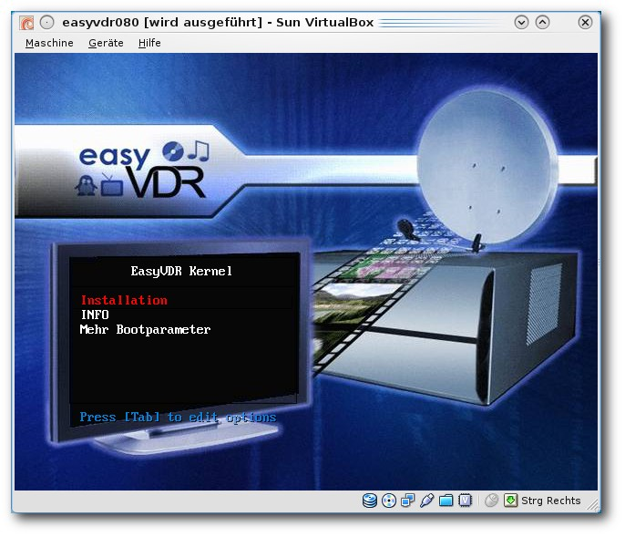
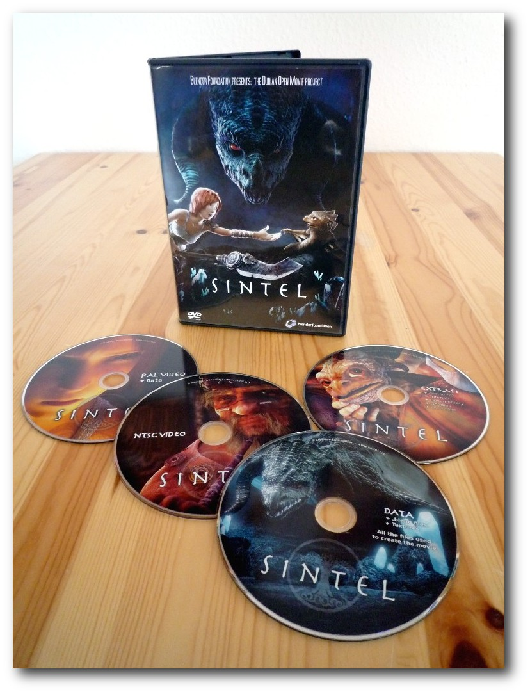

freiesMagazin Dezember 2010 (ISSN 1867-7991)
Topthemen dieser Ausgabe
Python-Programmierung: Teil 3 – Tiefere Einblicke
Im vorherigen Teil dieser Reihe wurden Listen, Zeichenketten und die beiden Kontrollstrukturen if und while behandelt. Dieses Mal werden mit Funktionen und Modulen zwei wichtige Möglichkeiten vorgestellt, um eigene Python-Projekte zu strukturieren und wiederverwendbar zu machen. Zunächst sollen aber noch die versprochenen Ersetzungen bei Zeichenketten besprochen werden. Mit den „Dictionaries“ wird zudem ein weiterer wichtiger Datentyp in Python vorgestellt. (weiterlesen)
Nepomuk in KDE – Theorie und Praxis
Es gibt Technologien, die viele Funktionen bieten, aber deren tieferer Sinn manchen Benutzern verborgen bleibt. Ob dies an fehlender Dokumentation liegt oder an dem neuartigen Ansatz der Bedienung, sei dahingestellt. Eine dieser Technologien ist Nepomuk in KDE. Um zu verstehen, was es tut und warum, muss man sich etwas mit der Theorie beschäftigen. Des Weiteren wird dieser Artikel auch auf die tägliche Verwendung eingehen. (weiterlesen)
Rezension: Sintel
Lange hat es gedauert, bis der Open-Source-Film Sintel der Blender Foundation fertig war. Und noch länger hat es gedauert, ehe die vorbestellbaren DVDs versandt wurden. Nun liegt ein Exemplar zur Rezension vor und kann in allen Belangen überzeugen, denn nicht nur die Animation der Figuren sind gut, auch die Story nimmt einen mit. Nach einem Jahr Produktionszeit ist ein exzellenter Kurzfilm entstanden. (weiterlesen)
Zum Index
Inhalt
Linux allgemein
Fedora 14
easyVDR 0.8
Der November im Kernelrückblick
Anleitungen
Python-Programmierung: Teil 3
Bildformat SVG verstehen
ALSA konfigurieren
Software
Invertika – ein Open-Source-MMORPG
Nepomuk in KDE – Theorie und Praxis
Community
Rezension: Sintel
Ubuntu Developer Summit 2010
Rezenzion: Phrasebooks
Rezension: iText in action
Magazin
Editorial
Leserbriefe
Veranstaltungen
Vorschau
Konventionen
Impressum
Zum Index
Editorial
Frohe KundeNeue Lizenz
Nach einer langen Zeit der Veröffentlichung von freiesMagazin unter der GNU Free Documentation License (GFDL) [1] haben wir uns nun entschlossen, freiesMagazin ab Dezember 2010 unter der Creative-Commons-Lizenz CC-BY-SA 3.0 Unported [2] zu veröffentlichen. (Einen Vergleich beider Lizenzen gibt es in der englischen Wikipedia [3].) Einer der Gründe für den Wechsel ist vor allem die einfachere Handhabung der CC-Lizenz – schließlich wollen wir den Forderungen einer Lizenz auch nachkommen und hier stellt die GFDL ein Projekt wie freiesMagazin ebenso vor praktische Probleme wie schließlich auch die Nutzer der Inhalte von freiesMagazin [4]. So reicht es bei der GFDL normalerweise nicht aus, wenn man nur einen Link auf die Lizenz angibt und sagt, dass der Artikel unter der GFDL veröffentlicht wird (hiervon gibt es Ausnahmen bei gedruckten Exemplaren in großer Menge). Abschnitt 2 der Lizenz verlangt nämlich eine Mitlieferung und Abdruck des kompletten Lizenztextes [5]. Was bei gedruckten Handbüchern noch leicht möglich ist (man hat eben zwei Seiten mit Lizenztext mehr), ist in einem Magazin oder gar einem einzelnen Artikel schwer umzusetzen. Und auch am Abschnitt „Modifikationen“ [6] merkt man, dass die GFDL eher für komplette (wissenschaftliche) Arbeiten oder Bücher gedacht ist und nicht für einzelne Artikel, die aus zwei oder drei Seiten bestehen. Die Creative-Commons-Lizenz macht dies etwas einfacher. Neben der Angabe von Autor und Lizenz reicht ein Link auf den Lizenztext, um ein Werk vervielfältigen zu können. Daneben muss sich ein normaler Benutzer nicht mit dem schwer verständlichen Lizenztext herumschlagen, da ein Link auf die menschenverständliche Zusammenfassung ausreicht. Natürlich würden wir gerne auch hierzu Ihre Meinung wissen. Wie stehen Sie dem Lizenzwechsel gegenüber, was halten Sie davon? Lassen Sie uns Ihre Meinung wissen und nehmen doch einfach an der Umfrage [7] teil. Hinweis: Das freiesMagazin-Logo von Arne Weinberg unterliegt derzeit weiterhin der GFDL.Sintel-Gewinnspiel
Diesen Monat präsentieren wir Ihnen auch eine Rezension zum Open-Source-Film Sintel der Blender Foundationen, der Ende Oktober auf DVD veröffentlicht wurde. Passend dazu haben wir uns auch ein Gewinnspiel ausgedacht, bei der nur eine simple Frage beantwortet werden muss: „Wer hat (zum größten Teil) die Kämpfe in Sintel choreographiert?“ Die ersten drei richtigen Einsendungen gewinnen eine CD der Band „The Nuri“ [8]. Diese sind auch auf dem Sampler zum Free! Music! Contest 2010 [9] zu finden und haben den Wettbewerb sogar für sich entscheiden können [10]. Die Musik der Band wird unter Creative-Commons-Lizenzen vertrieben, was natürlich sehr gut zum Film passt. Wer die Antwort auf die Frage weiß und eine CD gewinnen möchte, kann uns über den Kommentarlink am Ende des Editorials, per Kontaktformular [11] oder per E-Mail anPython-Screencasts
Unser Python-Tutorial, welches Autor Daniel Nögel vor zwei Monaten startete und in dieser Ausgabe mit Teil 3 fortgesetzt wird, kommt bei den Leser recht gut an (denken wir). Ein Leser mit dem Pseudonym TheRegRunner hat sich hingesetzt und die beiden bisher erschienenen Artikel in zwei Screencasts zusammengetragen [12] [13]. Damit bietet er allen lesefaulen Python-Neulingen einen guten Einblick in das Thema. Zum Nacharbeiten und für Copy & Paste sind die Artikel in freiesMagazin aber natürlich besser geeignet. Zum Abschluss wünschen wir allen Leser schöne Feiertage – und bleiben Sie uns auch im Jahr 2011 weiterhin treu. Ihre freiesMagazin-Redaktion Links[1] http://www.gnu.org/licenses/fdl.html
[2] http://creativecommons.org/licenses/by-sa/3.0/deed.de
[3] http://en.wikipedia.org/wiki/Wikipedia:Comparison_of_GFDL_and_CC-BY-SA
[4] http://www.heise.de/newsticker/meldung/GFDL-1-3-Ausweg-aus-der-Lizenz-Einbahnstrasse-215081.html
[5] http://rybaczyk.freeunix.net/licenses/fdl-1.3.de.html#verbatim-copying
[6] http://rybaczyk.freeunix.net/licenses/fdl-1.3.de.html#modifications
[7] http://www.freiesmagazin.de/20101205-umfrage-freiesmagazin-mit-cc-lizenz
[8] http://www.the-nuri.de/
[9] http://musik.klarmachen-zum-aendern.de/nachrichten/free_music_contest_2010_-_der_sampler-531
[10] http://musik.klarmachen-zum-aendern.de/free_music_friday/nuri-559
[11] http://www.freiesmagazin.de/kontakt
[12] http://www.youtube.com/watch?v=0qO64mnDDaw
[13] http://www.youtube.com/watch?v=ADkQmrelvsY
Das Editorial kommentieren
Zum Index
Fedora 14
von Hans-Joachim Baader Fedora 14 ist am 2. November 2010 erschienen und wartet mit aktualisierten Desktops und einer Vielzahl von neuen Funktionen auf. Dieser Artikel soll einen Überblick über die Neuerungen geben. Redaktioneller Hinweis: Der Artikel „Fedora 14“ erschien erstmals bei Pro-Linux [1].Display-Manager gdm.
Vorwort
Fedora 14 „Goddard“ erschien am 2. November 2010, ein halbes Jahr nach Fedora 13, genau im Zeitplan. Die Entwickler hoben in den Anmerkungen zur Veröffentlichung [2] vier wesentliche Neuerungen heraus: Spice, die Bereitstellung von Teilen von MeeGo, Images für die Amazon-Cloud EC2 und ein D-Compiler. Alle diese Neuerungen werden im Laufe des Artikels näher beschreiben. Auffällig ist, dass alle vier nur für einen kleineren Nutzerkreis interessant sind. Daneben gab es natürlich andere Änderungen und zahlreiche Updates, deren Aufzählung im Einzelnen den Rahmen sprengen würde. Vorab sei angemerkt, dass es sich bei diesem Artikel nicht um einen Test der Hardwarekompatibilität handelt. Distributoren haben einiges an Hardware für solche Tests zur Verfügung. Ein Test ist damit in diesem Artikel überflüssig, denn es wäre zu viel Aufwand für wenig Nutzen, eine repräsentative Auswahl von Hardware zu beschaffen. Da eine Erprobung auf realer Hardware somit unnötig ist, werden für den Artikel zwei identische virtuelle Maschinen, 64 Bit, unter KVM mit jeweils 768 MB RAM verwendet.Display-Manager kdm.
Installationsmedien
Fedora kann auf verschiedene Arten installiert werden, zum Beispiel von einem Live-System aus, das als ISO-Image verfügbar ist. Ein direktes Starten eines Installationssystems ist mit einer DVD oder dem äquivalenten Satz von CDs möglich. Daneben stehen weitere Formate zur Verfügung, die teilweise etwas Stöbern auf der Downloadseite [3] erfordern. Von Fedora 14 stehen DVDs für die Architekturen x86 und x86_64 sowie Live-CDs mit GNOME, KDE, LXDE und Xfce für x86 und x86_64 zur Verfügung [4]. Bei den Live-CDs ist der Umfang der Software natürlich beschränkt, was der Grund dafür ist, dass es verschiedene Varianten gibt. Mehr Software kann man von der DVD oder alternativ von einem Satz aus sechs CDs installieren. Die DVD bietet auch ein Rettungssystem sowie eine Textmodus-Installation.Installation von der Live-CD.
Installation
Die Installation ist so einfach, dass sie von allen Anwendern meist ohne Probleme bewältigt werden kann, und das ist ja nach wie vor wichtig, solange nur wenige Rechner mit vorinstalliertem Linux ausgeliefert werden. Die grafische Installation benötigt 384 MB RAM, es werden jedoch 512 MB empfohlen. Die textbasierte Installation benötigt 256 MB. Fedora empfiehlt, die grafische Installation zu verwenden, wenn möglich. Ist das nicht möglich, sollte man die grafische Installation per VNC von einem anderen Rechner aus steuern oder die automatische Installation mit Kickstart wählen. Wenn nur der Textmodus bleibt, kann man nur ein System mit einer festen Auswahl von Basispaketen und einer Standard-Partitionierung aufsetzen. Die grafische Installation ist gegenüber Fedora 13 [5] nahezu unverändert. Das Dateisystem ext4 ist die Voreinstellung. Btrfs gilt bei Fedora weiter als experimentell und wird daher nicht als Dateisystem zur Auswahl angeboten, außer man gibt bereits beim Booten die Option btrfs an. Standardmäßig wird keine separate /home-Partition angelegt, was nicht sehr update- oder wiederherstellungsfreundlich ist. Dafür wird LVM für die Partitionierung verwendet, und Verschlüsselung und RAID sind verfügbar. Bezüglich der Partitionierung kann wohl niemand Fedora etwas vormachen. Im eigens bereitgestellten Installationshandbuch [6] werden alle verfügbaren Optionen erörtert und Tipps gegeben.Auswahl der Partitionierungsoptionen.
Laufender Betrieb
Fedora 14 startet etwa genauso schnell oder minimal schneller als sein Vorgänger. Dass nahezu alle Softwarepakete, bei denen das möglich war, aktualisiert wurden, versteht sich von selbst. Der Kernel wurde auf Version 2.6.35.6 gebracht [7]. Als Desktop-Systeme stehen unter anderem KDE SC 4.5.2 und GNOME 2.32.0 zur Verfügung. Das neue Hintergrundbild verursacht eine optische Täuschung, die man besonders gut bei transparenten Fenstern wahrnimmt. Die neue Version von GNOME [8] bringt den Benutzern weitgehend das gewohnte Erscheinungsbild ohne böse Überraschungen. Obwohl der Standard-Browser von GNOME Epiphany ist, bleibt es unter Fedora, wie gewohnt, bei Firefox, der jetzt in Version 3.6.12 vorliegt. Pino, ein Client für soziale Netze, funktioniert mit Twitter nicht mehr und wurde daher aus der Standardinstallation entfernt. Stattdessen kann man Programme wie Gwibber nachinstallieren. Als Office-Suite ist OpenOffice.org 3.3.0 installiert. Beim ersten Aufruf von OpenOffice.org installiert sich automatisch der OpenOffice.org-Schnellstarter. Für Office-Wenig-Benutzer dürfte dieser unnötig sein, er kann aber leicht entfernt werden. Die GNOME-Live-Installation dürfte einen geringeren Software-Umfang enthalten. Das Bildbearbeitungsprogramm GIMP ist weiterhin Teil der Standardinstallation.GNOME-Desktop mit Firefox.
KDE 4.5.2 bringt viele Verbesserungen und Erweiterungen gegenüber Version 4.4.3, die in Fedora 13 enthalten war. Als Browser ist nach wie vor Konqueror vorinstalliert. Er verwendet die WebKit-Engine. Auch Fedora verwendet die monochromen Icons in der Systemleiste, die bei Ubuntu 10.10 bereits kritisiert wurden (siehe „Ubuntu 10.10“, freiesMagazin 11/2010 [9]). Es handelt sich wohl um die neue Voreinstellung von KDE und ist letztlich nur Geschmackssache. Auch der im Ubuntu-Artikel festgestellte Absturz im Dateibetrachter Okular ist vorhanden. Er ist eindeutig KDE selbst und nicht der Distribution anzulasten. Die meisten Benutzer dürften davon aber gar nichts betroffen sein, da mittlerweile klar ist, dass er sich nur in bestimmten Fällen, beispielsweise bei 16 Bit Farbtiefe, bemerkbar macht. Eine andere Auffälligkeit zeigte der Benachrichtigungs-Daemon knotify4. Normalerweise sollte dieses Programm einfach nur auf Nachrichten warten. In Fedora 14 scheint das Warte-Intervall so kurz zu sein, dass der Daemon 2000 Mal pro Sekunde aufwacht. Das führt zu einer permanenten CPU-Auslastung von 2 %. Bei jedem Aufwachen wird ein Dateideskriptor gelesen, um zu sehen, ob Daten vorhanden sind, und die Systemzeit ermittelt.
KDE-Desktop mit Konqueror.
Wie immer ist in Fedora SELinux eingebunden und aktiviert. Es macht sich mittlerweile für normale Benutzer nicht mehr bemerkbar, so dass man fast vergessen könnte, es zu erwähnen. Neben den offenbar ausgereiften Profilen sind auch Werkzeuge zur Diagnose von Problemen vorhanden. GNOME benötigt in Fedora 14 direkt nach dem Start mit einem geöffneten Terminalfenster etwa 230 MB RAM, KDE satte 100 MB mehr. Wer der Meinung ist, auf Nepomuk und Desktopsuche verzichten zu können, kann diese abschalten, wird dadurch aber fast nichts einsparen. Bei der Geschwindigkeit lässt sich kein nennenswerter Unterschied zwischen den Desktops feststellen, sofern genug RAM vorhanden ist. Für KDE bedeutet das, dass man mindestens 768 MB RAM haben sollte. Den Speicherverbrauch der Desktops zu messen ist nicht einfach. Schwankungen von 20 MB und mehr nach oben und unten sind möglich, je nach dem Zeitpunkt der Messung. Dies erklärt sich teilweise daraus, dass manche Programme bei ihrem Start einen oder mehrere Dienste starten. Diese Dienste werden bei Nichtbenutzung teilweise nach einiger Zeit auch wieder beendet. Bei obigen Angaben wurde versucht, den ungefähren Mittelwert zu finden.
Paketverwaltung und Updates
Wenig Neues gab es bei Fedora im Bereich der Paketverwaltung. Das GNOME-Frontend von PackageKit, gpk-application, kann weiterhin keine Software-Repositorys hinzufügen oder entfernen. Abgesehen davon läuft es problemlos. Auf KDE-Seite wurde KPackageKit verbessert. Es wurde nach der Freigabe von Fedora 14 von Version 0.6.1 auf 0.6.2 aktualisiert. Trotz der Verbesserungen besitzt es weiterhin einige Mängel, die es wie eine schlechten Prototypen wirken lassen, wie schon im Ubuntu-Artikel erwähnt wurde. So lassen sich in der Suche nach Softwarepaketen keine Wildcards verwenden. Die Auswahl der Funktionen „Softwareverwaltung“, „Softwareaktualisierungen“ und „Einstellungen“ hätte leicht in einem Menü erfolgen können, anstatt so viel Platz auf dem Bildschirm zu verschwenden. Einige Pakete wurden in den Suchergebnissen doppelt aufgeführt. Beim ersten Update meldete KPackageKit zudem einen unbekannten Repository-Schlüssel. Anscheinend vertraute das Programm den eigenen Update-Quellen nicht.KPackageKit vertraut den eigenen Update-Quellen nicht.
Multimedia
Wie gewohnt bringt Fedora den Multimedia-Server PulseAudio in der neuesten Version mit. Für Musiker mit strikteren Echtzeitanforderungen gab es bisher optional Jack. Jetzt wurde Jack durch Jack2 (früher jackdmp) in Version 1.9.5 ersetzt. Es ist kompatibel mit vorhandenen Jack-Anwendungen. Es ist standardmäßig installiert, denn eines seiner Features ist, dass er parallel zu PulseAudio existieren kann. Wenn der Jack-Daemon startet, entreißt er PulseAudio die Kontrolle über das Audiogerät und gibt sie nach getaner Arbeit wieder zurück. Aussetzer im Audiostrom sollen mit Jack2 kaum noch möglich sein. Zum einen wurde die Software durch Parallelausführung auf allen Prozessoren schneller. Außerdem können Verbindungen zwischen den Programmen geändert werden, ohne den Audio-Strom zu unterbrechen, und es gibt eine „asynchrone“ Aktivierung. Wenn ein Programm ein Sample nicht rechtzeitig sendet, wiederholt Jack2 automatisch das vorhergehende, was in den meisten Fällen nicht einmal wahrnehmbar sein soll. Neu ist der Musicians' Guide [10], der Einsteigern eine Anleitung zu Audiosoftware unter Linux geben soll. Das Dokument behandelt Audio-Grundlagen und enthält Tutorials zu Programmen wie Audacity, Ardour, Digital Audio Workstations, Qtractor, Rosegarden, FluidSynth, SuperCollider, Lilypond, Frescobaldi und GNU Solfege. Auch für andere Interessengruppen gibt es spezielle Anleitungen auf der Fedora-Dokumentationsseite. Aus den bekannten Gründen kann Fedora, ebenso wie die meisten anderen Distributionen, nur wenige Medienformate abspielen, da es viele benötigte Codecs nicht mitliefern kann. Wenn man versucht, ein Video abzuspielen, dann erhält man mit dem KDE-Videoplayer DragonPlayer nicht einmal eine Meldung, dass etwas nicht geht. Nur Totem bietet auch die Option an, über die Paketverwaltung nach passenden Plug-ins zu suchen. Dazu muss man aber vorher in der Paketverwaltung die zusätzlichen Repositorys eintragen. Wenn man weiß, wie es geht, ist es im Prinzip ganz einfach: Über die Webseite von RPM Fusion [11] kann man Pakete installieren, die die Repositorys hinzufügen. Dies gilt für GNOME wie für KDE. In der letzten Version funktionierte das Installieren der Repositorys unter KDE nicht; dies wurde jetzt glücklicherweise behoben. Nach dieser Vorbereitung ist Totem unter GNOME und KDE in der Lage, die benötigten Plug-ins selbsttätig zu installieren, danach funktioniert der Medienplayer erwartungsgemäß. Totem erscheint bei Installation von DVD auch unter KDE als Standard-Medienplayer. Kaffeine und DragonPlayer sind als Alternativen installiert. Leider konnten beide zunächst weder eines der Videos abspielen noch Hinweise auf die Ursachen geben. Erst mit dem Wissen, dass das Phonon-Backend standardmäßig auf Xine eingestellt ist, kommt man weiter, kann das Backend auf GStreamer umstellen und schon läuft alles. Mit Fedora 13 war das noch nicht so problemlos. Nach Installation des Gnash-Plugins in Version 0.8.8 ließen sich diverse Flash-Videos im Web abspielen. Mit YouTube-Videos gelang das nicht, obwohl es unter anderen Distributionen geht. Die Ursache ließ sich kurzfristig nicht ermitteln.Weitere Neuerungen
Die Integration des SPICE-Frameworks für Desktop-Virtualisierung will erreichen, dass man die Oberfläche einer virtuellen Maschine, die auf einem 64-Bit-Linux-Server läuft, auf einem anderen Rechner ansehen kann. Damit kann man virtuelle Maschinen (z. B. eine Maschine pro Benutzer) auf einem leistungsstarken Rechner ausführen, während die Desktop-Systeme deutlich langsamer und austauschbar sind. SPICE [12] wurde von Qumranet entwickelt, das von Red Hat übernommen wurde. Wer SPICE außerhalb von Fedora probieren möchte, muss auf Qemu 0.13 aktualisieren und noch ein paar weitere Voraussetzungen schaffen. Die virtuelle Maschine muss mit dem neuen Grafikgerät „qxl“ konfiguriert werden. In der virtuellen Maschine sollte man dann den speziellen qxl-Treiber installieren, für Linux ist das xserver-xorg-video-qxl. Andernfalls wird der Standard-VGA-Treiber verwendet, der langsam und ineffizient ist. Leider ist diese Version von SPICE noch nicht mit libvirt integriert, das steht aber bereits auf dem Plan.KDE-Desktop mit OpenOffice.org Writer.
Auch sonst hat sich bei der Virtualisierung wieder einiges getan. Erstmals werden nun Images für die Cloud Amazon EC2 bereitgestellt. Mit dem Programm virt-v2v kann man virtuelle Maschinen von Xen nach KVM migrieren. Fedora 14 kann als DomU laufen, jedoch nicht als Dom0, außer man ersetzt den Kernel auf eigenes Risiko. Die neue Unterstützung für das Security Content Automation Protocol (SCAP) besteht aus der Bibliothek OpenSCAP und mehreren Werkzeugen. Damit lässt sich die Sicherheit des Systems in standardisierter Weise sicherstellen. Unter anderem kann man nach verfügbaren Patches suchen und Einbrüche erkennen. Für Entwickler wurden Perl auf Version 5.12.1, Python auf 2.7 und Erlang auf R14 aktualisiert. Erstmals sind umfassende Entwicklungsumgebungen für die Programmiersprache D [13] und für das Desktop-System GnuStep verfügbar. Als D-Compiler wird allerdings der auf LLVM beruhende LDC benutzt, nicht der GNU-D-Compiler (GDC). Der Debugger gdb wurde schneller und die Entwicklungsumgebungen NetBeans 6.9 und Eclipse 3.6 sind in aktuellen Versionen dabei. Auch Perl 6 mit Raduko Star wird bereitgestellt. Dazu kommt das Paket gdb-heap, das eine Analyse ermöglicht, wie ein Programm den Speicher verwendet. Weiter zu nennen sind eine bessere Unterstützung für das Statistikpaket R, die Datenerfassungsplattform ROOT, vollständige Server-Verwaltung über IPMI mit ipmiutil und die schnellere JPEG-Bibliothek libjpeg-turbo. Das Paket man wurde durch man-db ersetzt, und eine „integrierte Untermenge“ von Software aus dem MeeGo-Projekt ist verfügbar. Es handelt sich um die MeeGo Netbook UX-Umgebung und ein paar Panel-Applets.
Fazit
Fedora 14 enthält kaum drastische Änderungen gegenüber dem Vorgänger, aber viele Verbesserungen und Neuerungen. Im Vergleich zum Vorgänger läuft Fedora 14 spürbar runder, was aber auch den Upstream-Projekten zu verdanken ist. Fedora verzichtet im Desktopbereich weitgehend auf Alleingänge und liefert so die Desktopumgebungen bis auf eine angepasste Optik im Originalzustand aus. Wo Probleme beobachtet wurden, sind diese dann in der Regel nicht Fedora anzulasten, sondern den jeweiligen Projekten. Die vielen fortgeschrittenen Funktionen, z. B. bei der Virtualisierung, machen Fedora für Poweruser interessant. Auch Entwickler werden mit den verschiedenen neuen oder aktualisierten Entwicklungsumgebungen stark umworben. Wie immer sollte man mit dem Update oder Umstieg auf Fedora 14 einige Wochen warten, denn die aktuelle Software bringt es mit sich, dass wenig getestet werden konnte und sich gerade in den ersten Wochen viele Probleme zutage treten. Wer sicherer vor Updates sein will, sollte vielleicht immer nur die zweitneueste Version einsetzen. Dabei macht sich allerdings der kurze Support-Zeitraum von Fedora negativ bemerkbar. Man ist im Prinzip gezwungen, alle sechs Monate zu aktualisieren. Ein generelles Problem von Fedora ist die ungezügelte Update-Politik. Diese könnte die Anwender abschrecken, die sich nicht ständig mit Updates befassen wollen, und schon gar nicht, wenn diese neue oder geänderte Funktionen mitbringen. Fedora 13 beispielsweise erhielt in einer KDE- oder GNOME-Standardinstallation in den letzten sechs Monaten etwa 500 Updates. Allerdings erfüllt Fedora damit seinen Anspruch, neue Entwicklungen schnell zu den Benutzern zu bringen und es werden viele Fehler korrigiert. Dabei können aber auch neue Fehler eingeschleppt werden. Den entgegengesetzten Anspruch, nur Fehler möglichst ohne jede Nebenwirkung zu beheben, kann Fedora nicht befriedigen, hierfür stehen Red Hat Enterprise Linux und CentOS als kompatible Alternativen bereit. Links[1] http://www.pro-linux.de/artikel/2/1472/fedora-14.html
[2] http://docs.fedoraproject.org/en-US/Fedora/14/html/Release_Notes/index.html
[3] http://fedoraproject.org/de/get-fedora
[4] http://fedoraproject.org/de/get-fedora-options
[5] http://www.pro-linux.de/artikel/2/1195/fedora-13.html
[6] http://docs.fedoraproject.org/
[7] http://www.pro-linux.de/news/1/15986/linux-kernel-2635-freigegeben.html
[8] http://www.pro-linux.de/news/1/16219/gnome-232-veroeffentlicht.html
[9] http://www.freiesmagazin.de/freiesMagazin-2010-11
[10] http://docs.fedoraproject.org/en-US/Fedora/14/html/Musicians_Guide/index.html
[11] http://rpmfusion.org/
[12] http://fedoraproject.org/wiki/Features/Spice
[13] https://fedoraproject.org/wiki/Features/D_Programming
| Autoreninformation |
| Hans-Joachim Baader (Site) befasst sich seit 1993 mit Linux. 1994 schloss er sein Informatikstudium erfolgreich ab, machte die Softwareentwicklung zum Beruf und ist einer der Betreiber von Pro-Linux.de. |
Zum Index
easyVDR 0.8 – HDTV-Version veröffentlicht
von Andreas Schott, Martin Neubauer und Ralf Hufnagel Die Distribution easyVDR ist eine unter der GPL [1] veröffentlichte Community-Distribution rund um den VDR. Dabei verwandelt die Freie Software Video Disc Recorder (VDR [2]) von Klaus Schmidinger handelsübliche PC-Hardware in einen digitalen Videorekorder und ermöglicht so Empfang, Aufnahme und Wiedergabe von digitalem Fernsehen – in der neuen Version 0.8 sogar offiziell auch in HDTV-Qualität [3]. Für die weiteren Features eines digitalen Videorekorders auf PC-Basis der easyVDR-Distribution sei hier auf den Artikel in freiesMagazin 07/2009 [4] verwiesen.easyVDR-Logo für Version 0.8. © Kerstin Lorbitzki (CC-BY-SA-3.0)
Empfangsmöglichkeiten
Der VDR unterstützt alle denkbaren Eingangsquellen für TV. Dies sind unter anderem:- Satellit (DVB-S, DVB-S2) [5],
- Kabel (DVB-C) [6],
- terrestrisch (DVB-T) [7],
- analoges TV (nur mit Hauppauge PVR *50/PVRUSB2) und
- Internet (IP-TV) [8].
Features der easyVDR-Distribution
Die aktuelle „stable“ Version 0.8 basiert auf Kernel 2.6.28.9 und VDR 1.7.0-extp72. Zur Grafikausgabe kommen xineliboutput (Version 1.0.90-cvs) [14] als lokales oder remote-Frontend zum Einsatz. Neu ist in Version 0.8 die Trennung von Backend und Frontend, was die Grundeinstellungen und die Erstinstallation deutlich vereinfacht. Mit stetig eingepflegten Weiterentwicklungen, z. B. aktuellen DVB-Treibern, ffmpeg oder VDPAU [15] ist easyVDR 0.8 trotz der betagteren Basis Debian Etch [16] am Puls der technischen Entwicklung und der Unterstützung aktueller Hardware. VGA2Scart [17], die Möglichkeit, einen Grafikkarten-VGA-Ausgang als SCART-Ausgabeausgang zu (miss)brauchen, wird bei den Motherboards mit Intels GMA 950-Reihe im Chipsatz (z. B. DG954LF/2 und DGJT945) sofort mit FrameRateControl [18] installiert und ermöglicht so eine preisgünstige VDR-Ausgabevariante in einer mit den bekannten Full-Featured-Karten [19] vergleichbaren Qualität. Dazu nötige Kabel sind über einen Nutzer des easyVDR-Forums fertig zu beziehen oder selbst zu löten. Aufzeichnungen von analogem Material mittels Hauppauge PVRx50 oder PVRUSB2-Geräten sind der „Retter“ der liebgewonnenen VHS-Aufzeichnungen.Das VGA2Scart-Kabel.
easyVDR bietet eine ausgefeilte Basiskonfiguration. Nach der ersten Installation sind nur wenige Einstellungen erforderlich, um die persönlichen Wünsche vieler Nutzer zu verwirklichen. Dies beginnt mit einer Vorauswahl von ca. 100 Plug-ins aus den inzwischen rund 300 verfügbaren VDR-Plug-ins. Diese werden je nach erkannter Hardware automatisch aktiviert, inklusive der notwendigen Konfiguration. Auch die Menüstruktur zur Bedienung des VDR wurde überarbeitet, um die teilweise sehr verstreut liegenden Einstellungen besser zusammenzufassen. Intern hat sich im Bereich der Entwicklung der Umstieg auf ein VCS-System [20] bewährt. Die Entscheidung fiel zu Gunsten von GIT [21]. Dort liegt mittlerweile nicht nur der Quellcode, sondern auch die Alpha-Updates und die des easyVDR-Webfrontends easyPortal. Zusätzlich hat man nun die Möglichkeit, seine Konfiguration und Einstellungen in einer Textdatei zu hinterlegen. Diese, auf einen weiteren ähnlich ausgestatteten VDR kopiert, erspart dort viel Konfigurationsaufwand. Diese Datei liegt in /media/easyvdr/myeasyvdr [22].
Hardwareanforderungen
Die Hardwareanforderungen [23] sind trotz HDTV-Unterstützung relativ moderat. Als perfekt funktionierende Kombination wird häufig das Asus M3N78-VM-Mainboard und ähnliche dieser Modellreihe genutzt, da hier bereits ein NVIDIA-Grafikchip eingebaut ist, der VDPAU-Decodierung unterstützt. Deren Nachfolger ist die M4N*-Serie. Als Prozessor genügt in diesem Fall beispielsweise ein AMD Sempron 140 und 1 GB RAM. Natürlich läuft easyVDR auch auf anderen Boards (mit vergleichbarer Hardware). Wichtig ist, dass für ungetrübten HD-Genuss ein NVIDIA-Grafikkern mindestens der der 8xxx-Serie mit möglichst 512 MB Grafikspeicher zu nutzen ist. Idealerweise kommt eine passiv gekühlte Karte zum Einsatz, um die Geräuschentwicklung im Wohnzimmer in Grenzen zu halten. Aufgrund deren Wärmeentwicklung empfiehlt sich jedoch der Einsatz eines großen, langsam drehenden und damit leisen Gehäuselüfters, der auf die Grafikkarte und möglichst die benachbarten Empfangskarten gerichtet ist. Natürlich unterstützt easyVDR auch noch FullFeatured-DVB-Karten [24] (mit Hardware MPEG(2)-Dekoder und hochwertigem SCART-Video Ausgang), allerdings dann logischerweise nur in SDTV. Die Mindestanforderungen für einen stabilen Betrieb beginnen hier bei einem Pentium3-Prozessor ab 733 MHz Taktfrequenz und 256 MB RAM. Möchte man aber aus den aufgenommenen Filmen auch DVDs brennen, XXV [25] nutzen oder auch mal Plug-ins [26] oder einen Kernel [27] kompilieren, wird ein stärkerer Prozessor empfohlen. Dann sollte eine CPU mit mindestens 1 GHz verwendet werden. Aber auch die guten alten DXR3, die PVR350 sowie die Digitainer mit Hardware-MPEG(2)-Decoder werden als Ausgabekarten selbstredend weiterhin unterstützt. Die Unterstützung der Activy (mit em84xx-Decoder) musste leider aufgrund des Kernelupdates fallengelassen werden bzw. ist ohne Support enthalten und kann durch die manuelle Auswahl von Kernel 2.6.22.15 und VDR 1.6.0-2 genutzt werden.Download und Installation
Man lädt ein fertiges ISO-Image [28] über das Internet. Aufgrund der deutlich erweiterten Features ist mittlerweile eine Installations-DVD nötig. Dann wird das Image auf einen DVD-Rohling gebrannt (im Brennprogramm „Image brennen“ aktivieren, langsame Brenngeschwindigkeit, da sich die Hersteller leider immer selbst überschätzen und so die Qualität des Brennergebnisses stark leidet) und der zukünftige VDR-PC von dieser DVD gebootet. Dann gelangt man in ein Bootmenü am zur Installation nötigen Bildschirm, das ermöglicht, direkt zu installieren oder bei Problemhardware aus einigen ACPI/APM-Konfigurationen zu wählen. Der Startbildschirm zur Installation.
Anschließend erscheint ein Bootmenü, in dem man automatische oder manuelle Installation auswählen kann.
Sowohl die automatische als auch die manuelle Installationweise stehen zur Verfügung.
Der vollkommen neue Installer erkennt eine bestehende (easy)VDR-Installation und verändert an der Medienpartition, auf der die Aufzeichnungen liegen, nichts. Eine Swap-Partition (Festplattenspeicher zur Vergrößerung des evtl. zu kleinen Hauptspeichers (RAM)) wird dynamisch nach RAM-Größe erstellt oder auch weggelassen. Anschließend wird die Partitionierung und evtl. Formatierung nochmals angezeigt und man muss der Installation durch Eingabe von „easyvdr“ explizit zustimmen.
Sicherheitsabfrage: Zustimmung zur Installation.
Nach Abschluss der Grundinstallation und einem Neustart erkennt der easyVDR die unterstützten Ausgabearten (NVIDIA- oder Intel-Grafikkern, Reel eHD- [29], Full-Featured DVB-, DXR3-, PVR350-Karte) automatisch und konfiguriert das System entsprechend. Danach folgt bei erkannter Intel- oder NVIDIA-Grafikkarte noch die Möglichkeit, einen X-Desktop [30] und Video-Ausgabe über das xineliboutput-Plug-in mit oder ohne VGA2Scart-Kabel zu realisieren. Einige Hardwarevarianten benötigen hierfür Daten aus dem Internet, was sofort funktioniert, wenn der Internet-Router die IP-Adresse dynamisch per DHCP [31] vergibt. Eine manuelle Netzwerkkonfiguration ist aber bei nicht erkannter Internetverbindung ebenfalls realisiert. Diese Installation lässt sich aber auch nachträglich anpassen – ebenso wie der Wechsel auf andere Ausgabearten problemlos funktioniert – indem man einfach das Skript 1st_start.sh [32] erneut aufruft. Am Ende dieses Installationprozesses sollte bei jedem Ausgabedevice nach Drücken von „M“ auf der Tastatur bereits das OSD-Menü [33] am angeschlossenen TV oder Monitor zu sehen sein.
Das OSD-Menü.
Nun stellt man noch im OSD unter dem Menüpunkt „System -> Einstellungen -> Grundeinstellungen und Systemstart -> Kanalliste“ die korrekte Kanalliste je nach Empfangsart und -ort ein und kann sich die ersten Sendungen ansehen. Ist zu der Zeit schon ein LIRC-Empfänger [34] an den seriellen Port oder via USB angeschlossen und die richtige Fernbedienung ausgewählt, funktioniert die Bedienung des VDR schon vom Sessel aus. Hierzu existiert ein Script unter /usr/bin/easyvdr/experimentell/extramenu/extra_menu.sh. Dazu schaltet man den laufenden VDR per Tastatur auf eine Textkonsole um („Strg“ + „Alt“ + „F1“), loggt sich als „root“ mit dem Passwort „easyvdr“ ein und startet das Skript, um eine der unterstützten Fernbedienungen auszuwählen. Dies kann natürlich auch via SSH erledigt werden. IR-Empfänger, die an einem Empfangsgerät angeschlossen sind, und manche USB-Funk-Empfänger (X10) lassen sich besser durch Nutzung des VDR-Remote-Plug-ins verwenden. Hierzu sucht man bei laufendem VDR den richtigen Eingang unter /dev/input/by-path/ (am besten per SSH den Namen exakt abschreiben). Das Plug-in wird im OSD unter „System -> Einstellungen -> Tastatur und Fernbedienung -> Lirc oder Remote benutzen“ auf „ja“ und auf der gleichen Ebene unter „Remote-Einstellungen -> Remote für interne IR-FB“ auf „ja“ gestellt. Die Invertierung bleibt deaktiviert und bei „sonst. Remote Parameter“ muss der Eingangsname eingetragen werden (-i /dev/input/by-path/EINGANGSNAME). Mithilfe der Zurück-Taste („Backspace“) speichert man dies. Gleiches gilt für LIRC-Einstellungen – ebenfalls zu finden unter „System -> Einstellungen -> Tastatur und Fernbedienung“. Hier in „System -> Einstellungen -> Lirc benutzen“ auf „nein“ setzen. Anschließend durch mehrmaliges Drücken der Zurück-Taste zurückgehen, bis man wieder im Livebild ist. Nun muss der VDR neu gestartet und die Fernbedienung im OSD-Menü unter „System -> Befehle -> System-Befehle -> FB neu anlernen“ angelernt werden. Da auch häufig Mischsysteme (DVB + Analog) benutzt werden, läuft eine eingebaute Hauppauge PVR150/250/350 (als Empfangsgerät) nach Aktivierung des Plug-ins pvrinput (z. B. über easyPortal [35]) und der korrekten Kanalliste ebenfalls sofort. Es werden natürlich auch mehrere DVB-Karten korrekt erkannt, was für einen Streamingserver [36] interessant ist. Dies können dann natürlich auch sogenannte Budget-Karten ohne Videoausgang sein. Zu einem mittlerweile sehr beliebten Feature hat sich easyPortal gemausert. easyPortal ist eine Website, die der VDR zur Verfügung stellt und die aktuell in der Version 0.2.02 vorliegt. Man muss nur „easyvdr“ oder die IP des VDR-PC in die Adresszeile eines Browsers auf einem anderen PC im selben Netzwerk (LAN) eingeben und erhält sofort viele wichtige Informationen, die das System betreffen. So kann man feststellen, welche Dienste aktuell laufen (Live, VDRAdmin, XXV, Samba, FTP etc.) und findet sich mit einem Klick im entsprechenden Dienst wieder. Das An- und Abschalten von Plug-ins macht die Verwaltung auch ohne laufenden VDR (sollte man ein Plug-in gestartet haben, welches den VDR nicht mehr starten lässt) sehr komfortabel. Angaben zum verfügbaren Plattenplatz, zu Temperaturen sowie zur installierten Hardware runden die Informationen zum easyVDR ab. Das weitaus wichtigste Feature ist aber innerhalb von easyPortal zweifellos „easyInfo“, mit dem man sich sehr viele relevante Log- und Konfigurationsdateien sowie Systeminfos ansehen kann. Das Posten dieser Datei, welche rechts oben auch zum Download zur Verfügung gestellt wird (grüner Pfeil, auch „Indianer“ genannt), macht die Fehlersuche für die Entwickler im Forum um vieles einfacher [37]. Die aktuelle Version beinhaltet keine neuen Features, wurde aber updatefähig gemacht und enthält viele strukturelle Verbesserungen, die die Lauffähigkeit sowohl unter easyVDR-Version 0.6.x als auch 0.8.x und der künftigen 1.0.x sicherstellt.
Backup
Hat man ein funktionierendes System, möchte man natürlich mehr Möglichkeiten nutzen. Dies birgt aber immer das kleine Risiko, dass das System danach nicht mehr startet. Kann man die Änderung, aus welchen Gründen auch immer, nicht rückgängig machen, kommt das Rückspielen eines Backups [38] zum Tragen. Es existiert die Möglichkeit der Erstellung eines Backups per OSD. Das Backup über OSD erstellt eine komplette Sicherung des easyVDR als Rettungs-DVD/Installations-DVD. Bis auf die speicherplatzintensiven Verzeichnisse, wie /video0 bzw. komplett /media, wird alles gesichert. Nach dem Erstellen befindet sich das ISO-Image im Verzeichnis /media/backup. Man erreicht die Backup-Funktion über „OSD -> System -> Befehle -> Backup“.Ausblick
Zum September existiert bereits eine Alpha-Version von easyVDR 0.9, die auf Ubuntu „Lucid Lynx“ basiert und im Gegensatz zur aktuellen Distribution (auf der Debian Etch-Basis) am Ubuntu-Grundsystem so gut wie keine Änderungen vornimmt. Alle Erweiterungen werden als Debian-Pakete eingespielt, womit die Basis unberührt bleibt. Das macht künftige Updates deutlich leichter und erlaubt es, über Paketmanager wie z. B. apt/aptitude Pakete zum Testen zu installieren oder sie auch vollständig zu deinstallieren.Fazit
Mit easyVDR Version 0.8 ist eine sehr benutzerfreundliche Installation möglich, bei der es nahezu jedem gelingt, unter Einsatz von entsprechend unterstützter Hardware, ein HD-VDR-System aufzubauen. Die Menge der „out of the box“-unterstützten Ein- und Ausgabegeräte ist sehr groß, die Konfiguration erfordert im Regelfall keinen manuellen Eingriff und die Hardwareanforderungen sind auch im Vergleich zu kommerziellen Fertiglösungen mehr als konkurrenzfähig. Informationen findet man auf der Projektinternetseite von easyVDR. Hier sind ein Wiki [39], ein Forum [40] und Bereiche der gemeinsamen Entwicklung eingerichtet. Auch das VDR-Portal [41] und das VDR-Wiki [42] halten als Urvater der VDR-Community viele Informationen bereit. Zu Hilfestellungen bei Problemen, bei Wünschen sowie Einblick oder Teilnahme an der Weiterentwicklung der Distribution, trifft die Online-Community um easyVDR sich im Forum [43]. Links[1] http://de.wikipedia.org/wiki/GNU_General_Public_License
[2] http://de.wikipedia.org/wiki/Video_Disk_Recorder
[3] http://de.wikipedia.org/wiki/High_Definition_Television
[4] http://www.freiesmagazin.de/freiesMagazin-2009-07
[5] http://de.wikipedia.org/wiki/DVB-S
[6] http://de.wikipedia.org/wiki/DVB-C
[7] http://de.wikipedia.org/wiki/DVB-T
[8] http://de.wikipedia.org/wiki/IPTV
[9] http://de.wikipedia.org/wiki/PCI-E
[10] http://de.wikipedia.org/wiki/Zeitversetztes_Fernsehen
[11] http://de.wikipedia.org/wiki/Bouquet_(Digitales_Fernsehen)
[12] http://de.wikipedia.org/wiki/Electronic_Program_Guide
[13] http://de.wikipedia.org/wiki/MPEG
[14] http://www.vdr-wiki.de/wiki/index.php/Xineliboutput-plugin
[15] http://de.wikipedia.org/wiki/Nvidia_PureVideo_HD
[16] http://de.wikipedia.org/wiki/Debian_GNU/Linux
[17] http://www.easy-vdr.de/forum/index.php?board=63.0
[18] http://frc.easy-vdr.de/
[19] http://www.vdr-wiki.de/wiki/index.php/Full-featured-DVB-Karte
[20] http://de.wikipedia.org/wiki/Versionsverwaltung
[21] http://de.wikipedia.org/wiki/Git
[22] http://wiki.easy-vdr.de/index.php/Tipps,_Tricks_und_pers%C3%B6nliche_Anpassungen#Zus.C3.A4tzliche_Plugins_uns_Einstellungen
[23] http://wiki.easy-vdr.de/index.php/Hardware_Kompatibilit%C3%A4t_/_Tipps_/_Links#Getestete_Hardware
[24] http://www.vdr-wiki.de/wiki/index.php/Full-featured-DVB-Karte
[25] http://www.vdr-wiki.de/wiki/index.php/Xxv
[26] http://wiki.easy-vdr.de/index.php/Plugins
[27] http://wiki.easy-vdr.de/index.php/Kernel
[28] http://ftp.gwdg.de/pub/linux/easyvdr/0.8/easyVDR_0_8_0_full.iso
[29] http://www.vdr-wiki.de/wiki/index.php/Reel-HDe
[30] http://de.wikipedia.org/wiki/Fluxbox
[31] http://de.wikipedia.org/wiki/Dynamic_Host_Configuration_Protocol
[32] http://wiki.easy-vdr.de/index.php/Zusammenh%C3%A4nge_der_Konfigurationsscripte
[33] http://de.wikipedia.org/wiki/On_Screen_Display
[34] http://www.vdr-wiki.de/wiki/index.php/LIRC
[35] http://wiki.easy-vdr.de/index.php/EasyPortal
[36] http://wiki.easy-vdr.de/index.php/VDR_als_Streaming_-_Server
[37] http://wiki.easy-vdr.de/index.php/Hilfe
[38] http://wiki.easy-vdr.de/index.php/Installation,_Backup_und_Restore
[39] http://wiki.easy-vdr.de/
[40] http://www.easy-vdr.de/forum/
[41] http://www.vdr-portal.de/
[42] http://www.vdr-wiki.de/
[43] http://www.easy-vdr.de/
| Autoreninformation |
| Andreas Schott, Martin Neubauer, Ralf Hufnagel (Site) sind Entwickler bei easyVDR, welches im Mai 2006 von den Hauptverantwortlichen Uwe Kiehl und Martin Neubauer angestoßen wurde, um eine umfassende und dennoch einfach zu installierende VDR-Distribution bereitzustellen. |
Zum Index
Der November im Kernelrückblick
von Mathias Menzer Basis aller Distributionen ist der Linux-Kernel, der fortwährend weiterentwickelt wird. Welche Geräte in einem halben Jahr unterstützt werden und welche Funktionen neu hinzukommen, erfährt man, wenn man den aktuellen Entwickler-Kernel im Auge behält.Kernel 2.6.37
Die erste Vorabversion des kommenden Kernels konnte Torvalds bereits am 1. November veröffentlichen (siehe „Der Oktober im Kernelrückblick“, freiesMagazin 11/2010 [1]), die unter anderem eines großen Teils des mittlerweile ungeliebten Big Kernel Locks verlustig wurde. Da darauf erst einmal das Linux Kernel Summit und die Linux Plumbers Conference folgten, die einen guten Teil der Zeit der Kernel-Hauptentwickler in Anspruch nahmen, konnte die zwei Wochen später erscheinende Version -rc2 [2] nicht allzu viele Änderungen aufweisen. Eine größere Aktion, zumindest was den Niederschlag in der Menge der gelöschten und hinzugekommenen Quelltextzeilen betrifft, stellt das Verschieben der tty-Umgebung in einen neuen, eigenen Bereich dar. Der „Teletypewriter“ (Fernschreiber), der die Standardeingabe und -ausgabe verwaltet und an Prozesse und Anwendungen weiterreicht beziehungsweise dem Nutzer darstellt, war bisher im Umfeld des Char-Treibers angesiedelt. Eigentlich wäre das passend, bietet dieser Treiber doch die Basis für zeichenorientierte Geräte wie der seriellen Schnittstelle oder den meisten Eingabegeräten. Doch derzeit liegt hier einiges an überflüssigem Code herum, den aufzuräumen Greg Kroah-Hartman nun offensichtlich mit tty begonnen hat. Auch die dritte Entwicklerversion [3] kam mit relativ wenig spektakulären Änderungen daher. Ein großer Teil wurde durch Arbeiten an Nouveau und Radeon, den freien Treibern für die Grafik-Chipsätze von NVIDIA und ATI/AMD, in Anspruch genommen. Eine kleines Problem, das in manchen Situationen auch den Endanwendern zu schaffen machen könnte, wurde von dem VMware-Entwickler Dmitry Torokhov durch einen Patch behoben: Die Systemabfragetaste, durch die Tastenkombination Alt-SysRq/Druck ausgelöst, dient dazu, Befehle unter Umgehung der aktuellen Oberfläche direkt an das System zu senden, um zum Beispiel einen nicht mehr reagierenden X-Server zu beenden. Diese Tastenkombination, auch als Magic SysRq Key [4] bekannt, wird allerdings vom Kernel abgefangen und nicht an die Oberfläche weitergeleitet, sodass beispielsweise Screenshots darüber nicht konfiguriert oder zumindest durchgeführt werden können. Torokhovs Patch behebt diesen Umstand nun, in dem die Weiterleitung an den Userspace nur unterbunden wird, wenn zu der Tastenkombination eine weitere Taste mit einem gültigen Befehl betätigt wird. 2.6.37-rc4 [5] brachte Ergänzungen der in 2.6.36 neu hinzugekommenen Tile64-Architektur [6], indem der Treiber für die auf dem Chip integrierte Netzwerk-Hardware aufgenommen wurde. Dieser einzelne Patch war für mehr als die Hälfte der Änderungen verantwortlich, der Rest war in erster Linie kleinen Verbesserungen und Korrekturen geschuldet. Aus diesen stach nach Ansicht Torvalds noch eine Reihe von Patches aus der Feder von Trond Myklebust, Entwickler im Dienste von Netapp, hervor, die ein Problem mit der Darstellung von NFS-Verzeichnissen endgültig beheben sollten. Leider hat sich mittlerweile gezeigt, dass der Effekt, bei dem die zurückgelieferte Verzeichnisliste leer ist, weiterhin auftreten kann [7]. Das Problem wurde bei 2.6.37-rc1 zum ersten Mal berichtet und scheint die Entwickler noch ein wenig weiter narren zu wollen.Neue Wege für das Scheduling
Immer wieder wird von verschiedenen Seiten darauf aufmerksam gemacht, dass Linux zwar auf Rechnern mit hunderten von Prozessoren gut skaliert, das ruckelfreie Abspielen eines Flash-Videos auf Ein- oder Zweikern-Systemen jedoch nicht immer funktioniert – zuletzt von dem Anästhesisten und ehemaligen Kernel-Entwickler Con Kolvias, der mit dieser Aussage seinen Brain Fuck Scheduler [8] vorstellte. Jedoch können Verbesserungen der Leistung eines Desktop-System nicht nur über den Scheduler (siehe Kasten „Kurz erläutert“) erreicht werden, sondern auch über die Art und Weise, wie die laufenden Prozesse sortiert werden. Für den Desktop-Nutzer misst sich die Leistung des Systems meist durch dessen Antwortverhalten. Reagiert es prompt auf Maus und Tastatureingaben, ist der Anwender zufrieden, bewegt sich der Mauszeiger jedoch ruckhaft, so ist die Bedienmöglichkeit eher eingeschränkt. Mike Galbraith verfolgt nun den Ansatz, Prozesse zu Gruppen nach Terminal sortiert zusammenzufassen und die CPU-Rechenzeit gleichmäßig auf diese Gruppen zu verteilen, während innerhalb der Gruppe die ihr zur Verfügung gestellte Zeit wiederum gerecht verteilt wird [9]. Das Kompilieren eines Kernels in 64 parallelen Threads (make -j64) würde zum Beispiel (in einem Terminal) in einer Prozessgruppe laufen, während der Webbrowser und das Mail-Programm des Anwenders in einer anderen zu finden wäre, beide Gruppen erhalten jedoch den gleichen Anteil an Rechenzeit zugeteilt. So wäre dem Nutzer das Surfen und Lesen der E-Mail noch möglich, dafür würde der Vorgang des Kompilierens geringfügig ausgebremst. Rechenzeit, die die Browser-E-Mail-Gruppe nicht benötigt, würde frei und damit automatisch vom Scheduler der Kompilierungsgruppe zugewiesen. Eben dieser Fall war das Testszenario von Torvalds, der sich daraufhin von Galbraiths Patch durchaus angetan zeigte [10] und sich sogar dazu hinreißen ließ, das Scheduling von Gruppen als „Killer-Feature“ zu bezeichnen. War die Diskussion um diesen Patch bisher sehr umfangreich, so werden Anwender bald in Kontakt mit „Group Scheduling“ kommen, denn der Scheduler-Experte des Linux-Kernels, Ingo Molnar, bat Galbraith bereits um die Einsendung des Patches für seinen Kernel-Zweig um ihn in 2.6.38 einbringen zu können [11].Neue Server für den Kernel
Die Server, auf denen der Kernel entwickelt wird, haben nun Verstärkung bekommen [12] – zwei Spiegelserver wurden durch Neugeräte mit jeweils 66 300GB-Festplatten ersetzt. Daneben stehen nun zwei neue Server zur Verfügung, von denen einer als Backup des Master-Servers von kernel.org fungiert, während der andere parallel zu „demeter.kernel.org“, dem Server für den Kernel Bugzilla und die Wikis, laufen und diesem unter die Arme greifen wird.|
Kurz erläutert: „Scheduler“ Der Scheduler (zu deutsch etwa: Arbeitsplaner) ist der Manager des Prozessors. Er verteilt die Rechenzeit der CPU möglichst gleichmäßig auf die wartenden Prozesse. Der in aktuellen Versionen des Linux-Kernels (seit 2.6.24) verwendete Completely Fair Scheduler (CFS) nutzt dazu Gruppen, in denen Prozesse jeweils eines Nutzers zusammengefasst werden. Jede Gruppe wird mit dem gleichen Anteil an Rechenzeit versehen, sodass jeder Anwender gleichberechtigt ist, unabhängig von der Anzahl und dem Leistungsbedarf der von ihm gestarteten Prozesse. Die einem Anwender zugeteilte CPU-Zeit wird wiederum gleichmäßig auf alle in seinem Kontext laufenden Prozesse verteilt. Wird die verfügbare Rechenzeit von einem Anwender nicht benötigt, so wird sie „zurückgegeben“ und vom Scheduler neu zugewiesen. |
Links
[1] http://www.freiesmagazin.de/freiesMagazin-2010-11
[2] http://lkml.org/lkml/2010/11/15/568
[3] http://lkml.org/lkml/2010/11/21/153
[4] http://de.wikipedia.org/wiki/Magic_SysRq_key
[5] http://lkml.org/lkml/2010/11/30/5
[6] http://en.wikipedia.org/wiki/TILE64
[7] http://lkml.org/lkml/2010/11/30/162
[8] http://de.wikipedia.org/wiki/Brain_Fuck_Scheduler
[9] http://www.heise.de/open/artikel/Kernel-Log-Flinker-mit-Prozessgruppen-1140656.html
[10] http://lkml.org/lkml/2010/11/14/222
[11] http://lkml.org/lkml/2010/11/16/307
[12] http://www.linux-magazin.de/NEWS/Hardware-Update-Linux-Quellen-kommen-von-frischen-Servern
| Autoreninformation |
| Mathias Menzer wirft gerne einen Blick auf die Kernel-Entwicklung, um mehr über die Funktion von Linux zu erfahren und um seine Mitmenschen mit seltsamen Begriffen und unverständlichen Abkürzungen verwirren zu können. |
Zum Index
Python-Programmierung: Teil 3 – Funktionen und Module
von Daniel Nögel Im vorherigen Teil dieser Reihe (freiesMagazin 11/2010 [1]) wurden Listen, Zeichenketten und die beiden Kontrollstrukturen if und while behandelt. Dieses Mal werden mit Funktionen und Modulen zwei wichtige Möglichkeiten vorgestellt, um eigene Python-Projekte zu strukturieren und wiederverwendbar zu machen. Zunächst sollen aber noch die versprochenen Ersetzungen bei Zeichenketten besprochen werden. Mit den „Dictionaries“ wird zudem ein weiterer wichtiger Datentyp in Python vorgestellt.Substitution von Zeichenketten
In den letzten beiden Teilen dieser Reihe wurden schon mehrfach einfache Zeichenketten erstellt. In der Regel möchte man aber nicht nur bloße Zeichenketten ausgeben, sondern bestimmte dynamische Informationen darin transportieren, etwa den Namen des Benutzers. Dies funktioniert in Python so, dass man zunächst Platzhalter in der Zeichenkette definiert und diese später mit der format()-Methode gegen den gewünschten Inhalt austauscht (substituiert).
>>> message = u"Hallo {0}, du hast {1} Euro im Portemonnaie.".format(u"Karl", 10)
>>> print message
Hallo Karl, du hast 10 Euro im Portemonnaie.
|
>>> names = [u"Karl", u"Bernd", u"Hannes", u"Ina" ]
>>> for name in names:
... print u"'{0}' hat {1} Buchstaben".format(name, len(name))
|
'Karl' hat 4 Buchstaben 'Bernd' hat 5 Buchstaben 'Hannes' hat 6 Buchstaben 'Ina' hat 3 Buchstaben |
>>> for name in names:
... print u"'{username}' \
... hat {namelength} \
... Buchstaben".format(\
... username=name, \
... namelength=len(name))
|
>>> print u"{0} mag Klammern wie \
... { oder }".format(u"Bernd")
Traceback (most recent call last):
File "<stdin>", line 1, in <module>
KeyError: u' oder '
|
>>> print u"{0} mag Klammern wie {{ oder }}".format(u"Bernd")
Bernd mag Klammern wie { oder }
|
Dictionaries
Sogenannte „Dictionaries“ oder „Dicts“ werden in anderen Sprachen oft „Hashes“ oder „assoziative Arrays“ genannt. Wie auch Listen können Dictionaries beliebige andere Datentypen verwalten. Während Listen aber ihre Einträge intern mit fortlaufenden Nummern adressieren (die sogenannten Indizes), können die Einträge in Dictionaries mit Zeichenketten, beliebigen Zahlen oder anderen Datentypen adressiert werden. Somit besteht jedes Dictionary aus zwei wesentlichen Elementen: Schlüsseln (keys) und Werten (values). Ein leeres Dict wird in Python entweder mit der Funktion dict() oder zwei geschweiften Klammern erstellt [3]:
>>> persons = dict() |
>>> persons = {}
|
>>> persons = {u"Peter":18, \
... u"Ilse":87, u"Juergen":33, \
... u"Jutta":25}
|
>>> print persons[u"Peter"] 18 |
>>> if u"Hans" in persons: ... print persons[u"Hans"] ... else: ... print u"Der Eintrag Hans \ ... ist nicht vorhanden" |
>>> print persons.get(u"Hans", 15) 15 >>> print persons.get(u"Peter", 5) 18 |
>>> print persons.get(u"Anke") None |
>>> persons[u"Peter"] = 99 >>> print persons[u"Peter"] 99 >>> persons[u"Hans"] = 15 >>> print persons[u"Hans"] 15 |
>>> addresses = {
... u"Peter":{u"street":"Musterstr. 16", u"mobile":"0151/123 456"},
... u"Jutta":{u"street":"Beispielstr. 99", u"mobile":"0151/33 44 55"},
... }
|
>>> print addresses[u"Peter"] |
{u'mobile': '0151/123 456', u'street': 'Musterstr. 16'}
|
>>> print addresses[u"Peter"][u"street"] Musterstr. 16 |
>>> peters_data = addresses[u"Peter"] >>> type(peters_data) <type 'dict'> >>> peters_data[u"street"] 'Musterstr. 16' |
>>> print addresses[u"Peter"][u"street"] |
{u"street":u"Musterstr. 16", u"mobile":"0151/123 456"}[u"street"]
|
Funktionen
Funktionen sind ein wichtiges Strukturierungsmerkmal moderner Programmiersprachen. Durch sie können häufig benötigte Arbeitsschritte leicht wiederverwertet werden. Damit dienen sie auch der Lesbarkeit und Wartbarkeit des Quelltextes. Eine Funktion wird in Python wie folgt deklariert:
def say_hallo(): print u"Hallo" |
def boxify(text):
text_with_borders = u"= {0} =".format(text)
line = len(text_with_borders) * u"="
output = u"{0}\n{1}\n{2}".format(line, text_with_borders, line)
return output
|
>>> print boxify(u"Mein Haus, mein Garten, meine Box") ===================================== = Mein Haus, mein Garten, meine Box = ===================================== |
def test(): print u"Hallo!" return print u"Dies ist ein Test" print u"start" test() print u"ende" |
start Hallo! ende |
def say_something(what, who=u"Karl"):
print u"{0} sagt: '{1}'".format(who, what)
say_something(u"Hi")
say_something(u"Tach auch", u"Bernd")
|
Karl sagt: 'Hi' Bernd sagt: 'Tach auch' |
def say_something(who="Karl", what): ... |
Parameter an Funktionen übergeben
In den obigen Beispielen wurden bereits verschiedene Parameter an die Funktionen übergeben. Etwa Tach auch und Bernd an die Funktion say_something(). In dem Beispiel muss sich der Programmierer peinlich genau an die im Funktionskopf definierte Reihenfolge halten. Die Parameter sind also abhängig von der Position – sie sind „positional“. Als Beispiel sei die folgende (nicht besonders schöne) Funktion gegeben, bei der die Argumente alle in einer bestimmten Reihenfolge angegeben werden müssen:
def print_a_lot(name, country, street, adress, mobile, age, sex, hobbies):
print u"{name} stammt aus {country} ...".format(name=name, country=country)
|
print_a_lot(name=u"Bernd", age=18, sex=u"m", street=u"Musterstrasse", adress=18, country=u"Deutschland", mobile=u"0151-123456789", hobbies=u"lesen") |
def print_info(name, country=None, street=None, adress=None, mobile=None, age=None, sex=None, hobbies=None):
if age:
print u"Hallo {0}! Du bist {1} Jahre alt!".format(name, age)
else:
print u"Hallo {0}".format(name)
|
print_info(u"Jutta", age=25) |
>>> from operator import add >>> add(1, 3) 4 >>> plus = add >>> plus <built-in function add> >>> plus(1, 3) 4 |
Module
Module bieten eine einfache Möglichkeit, seine Skripte um zusätzliche Funktionen zu erweitern. Es wurde bereits angesprochen, dass Python mit einer Vielzahl zusätzlicher Bibliotheken ausgeliefert wird – diese Bibliotheken heißen in Python Module. Sie werden durch den Befehl import in ein eigenes Skript eingebunden [5]:
import os
counter = 0
files = os.listdir(".")
for entry in files:
if os.path.isfile(entry):
counter += 1
print u"Es gibt {0} Dateien in diesem Verzeichnis".format(counter)
|
from os import listdir |
files = listdir(".")
|
Was es nicht alles gibt
Das os-Modul erscheint noch recht bodenständig: Bisher wurde damit der Inhalt eines Verzeichnisses aufgelistet und überprüft, ob eine bestimmte Datei ein Ordner oder eine Datei ist. Darüber hinaus gibt es aber Module für grafische Oberflächen [8], für Datenbanken [9], für die Bildbearbeitung [10] oder für mathematische und wissenschaftliche Anforderungen [11]. Es gibt Module, um Spiele zu programmieren [12], Module, um automatisiert Eingaben in Webseiten vorzunehmen [13], Module für Mediendateien [14], für IMAP [15] oder sogar BitTorrent [16]. Nicht alle diese Module gehören dabei zum Standardumfang [17] der Sprache – die fehlenden lassen sich aber leicht über die Paketquellen oder das eigens für Python entwickelte EasyInstall-System installieren.Module selbst gemacht
Es stellt sich nun natürlich die Frage, wie sich derartige Module selbst erstellen lassen. Die meisten Leser dieser Reihe werden dabei vermutlich schon lange das eine oder andere Python-Modul erstellt haben:
#! /usr/bin/env python
# -*- coding: utf-8 -*-
def boxify(text):
text_with_borders = u"= {0} =".format(text)
line = len(text_with_borders) * u"="
output = u"{0}\n{1}\n{2}".format(line, text_with_borders, line)
return output
|
#! /usr/bin/env python # -*- coding: utf-8 -*- import box name = unicode(raw_input(u"Bitte Namen eingeben: ")) print box.boxify(name) |
Einschränkungen und Erweiterungen
Der Python-Interpreter hat eine recht genaue Vorstellung davon, in welchen Verzeichnissen sich ein Modul befinden darf [18]. Befindet sich das Modul nicht in einem dieser Verzeichnisse, kommt es zu einem Fehler. Der Python-Interpreter schaut aber zusätzlich auch immer in das Programmverzeichnis – hier also etwa in das Verzeichnis der Datei myprog.py. So lange die selbst erstellten Module in diesem Verzeichnis zu finden sind, befindet sich der Anfänger also auf der sicheren Seite. Eine Erweiterung des Modul-Systems stellen die sogenannten „Packages“ dar [19]. Damit lassen sich verschiedene zusammengehörige Module bündeln und strukturieren. In dieser Einführung wird aber auf eine weitergehende Behandlung dieser Thematik verzichtet. Wer aber größere Bibliotheken programmieren möchte oder eine ganze „Werkzeugsammlung“ in Modulen organisieren will, sollte sich Packages einmal näher ansehen [20]. Nachdem nun Listen, Dictionaries, Zeichenketten, Module, Funktionen und verschiedene Kontrollstrukturen in den ersten drei Teilen dieser Einführung besprochen wurden, sollen im nächsten Teil Klassen vorgestellt werden.Praktisches Beispiel: Der Taschenrechner
In folgendem Beispiel kommen verschiedene bereits erlernte Techniken zum Einsatz.
#!/usr/bin/env python
# -*- coding: utf-8 -*-
from operator import add, sub, mul, div
def info(*args):
print "Moegliche Befehle:"
print ",".join(dispatch)
print "Syntax: BEFEHL [PARAM_A PARAM_B]"
dispatch = {
u"help": info,
u"add": add,
u"sub": sub,
u"mul": mul,
u"div": div,
u"addiere": add,
u"plus": add
}
def parser():
while True:
user_command = unicode(raw_input("calc: "))
tokens = user_command.split()
command = tokens[0]
arg_a, arg_b = None, None
if len(tokens) > 1:
arg_a = int(tokens[1])
arg_b = int(tokens[2])
print tokens
if command == u"quit":
return
elif command in dispatch:
result = dispatch[command](arg_a, arg_b)
print ">>> {0}".format(result)
else:
print "Unbekanntes Kommando '{0}'".format(command)
print "Tippe 'help' fuer Hilfe."
if __name__ == "__main__":
parser()
|
add 3 7 |
result = dispatch[command](arg_a, arg_b) |
if command == "add" or command == "addiere" or command == "plus":
result = arg_a + arg_b
elif command == "sub":
result = arg_a - arg_b
elif command == "div":
result = arg_a / arg_b
elif command == "mul":
result = arg_a * arg_b
elif command == "info":
info()
elif command == "quit":
return
else:
print "Unbekanntes Kommando '{0}'".format(command)
print "Tippe 'help' fuer Hilfe."
print ">>> {0}".format(result)
|
[1] http://www.freiesmagazin.de/freiesMagazin-2010-11
[2] http://docs.python.org/library/string.html#format-string-syntax
[3] http://docs.python.org/tutorial/datastructures.html#dictionaries
[4] http://www.python.org/dev/peps/pep-0372/
[5] http://docs.python.org/tutorial/modules.html
[6] http://docs.python.org/library/os.html
[7] http://effbot.org/zone/import-confusion.htm
[8] http://de.wikipedia.org/wiki/Liste_von_GUI-Bibliotheken#Python
[9] http://initd.org/tracker/pysqlite
[10] http://www.pythonware.com/products/pil/
[11] http://www.scipy.org/
[12] http://www.pygame.org/news.html
[13] http://wwwsearch.sourceforge.net/mechanize/
[14] http://pymedia.org/
[15] http://docs.python.org/library/imaplib.html
[16] http://www.rasterbar.com/products/libtorrent/python_binding.html
[17] http://docs.python.org/modindex.html
[18] http://docs.python.org/using/cmdline.html#envvar-PYTHONPATH
[19] http://docs.python.org/tutorial/modules.html#packages
[20] http://docs.python.org/distutils/index.html
| Autoreninformation |
| Daniel Nögel (Blog) beschäftigt sich seit drei Jahren mit Python. Ihn überzeugt besonders die intuitive Syntax und die Vielzahl der unterstützten Bibliotheken, die Python auf dem Linux-Desktop zu einem wahren Multitalent machen. |
Zum Index
Bildformat SVG verstehen
von Stefan Ohri Seit das W3C [1] vor neun Jahren die erste Spezifikation herausgab, hat sich die skalierbare Vektorgrafik (kurz SVG [2]) gut entwickelt und ist heute sehr populär. Viele Browser können SVG nativ darstellen; in der Wikipedia ist es neben PNG das populärste Format für Grafiken und die Icons der grafischen Linux-Oberflächen liefern neben PNGs in diversen Auflösungen auch SVG-Versionen mit. Was ist aber nun der Vorteil von SVG und warum verwendet man es? Obige Fragen kann man leicht mit zwei Punkten beantworten: SVG ist erstens skalierbar, das heißt, man kann es beliebig vergrößern und verkleinern, ohne Qualitätseinbußen befürchten zu müssen (sprich: es verpixelt nicht), und man kann es zweitens in jedem Texteditor bearbeiten. Eine Grafik in einem Texteditor bearbeiten? Ja, tatsächlich. Wo ein handelsübliches PNG nur Kauderwelsch anzeigt, wenn es in einem Texteditor geöffnet wird, erwartet einem bei einem SVG-Bild schon etwas mehr Klartext.Anfang eines in Kate geöffneten PNG-Bildes.
<?xml version="1.0" encoding="UTF-8" standalone="no"?> <!DOCTYPE svg PUBLIC //W3C//DTD SVG 1.0//EN" "http://www.w3.org/TR/2001/REC-SVG-20010904/DTD/svg10.dtd"> <svg xmlns:svg="http://www.w3.org/2000/svg" xmlns="http://www.w3.org/2000/svg" xmlns:xlink="http://www.w3.org/1999/xlink" xmlns:inkscape="http://www.inkscape.org/namespaces/inkscape" version="1.0" width="920" height="1060" id="svg2"> <defs id="defs4"> <linearGradient id="linearGradient15295"> <stop id="stop15297" style="stop-color:#ffffff;stop-opacity:0" offset="0" /> ..... |
{kind=link}
Beispiel Mahuri.svg von Wikimedia. © Niabot (CC-BY-3.0)
{kind=link}
Dieses Beispielbild gibt gut wieder, was mit SVG möglich ist. Es wurde mit Inkscape erstellt und ist, wie man sich denken kann, ungleich komplexer als ein einfaches Logo. Wie man in der ersten Zeile lesen kann, ist SVG eine Anwendung von XML. In XML-Schreibweise kann man Linien, Kreise, Rechtecke und freie Linien, Farbverläufe, Transparenzen und vieles mehr beschreiben und Text und Rastergrafiken einbinden. Der Text wird dann von einem Interpreter (z.B. einen Webbrowser) Zeile für Zeile gelesen und dargestellt. Die jeweils letzte Zeile wird also zuoberst gezeichnet.
Grundlagen
Ein einfaches SVG, ohne jeglichen Inhalt, erzeugt man mit den folgenden Zeilen:
<?xml version="1.0" encoding="UTF-8"?> <!DOCTYPE svg PUBLIC //W3C//DTD SVG 1.1//EN" "http://www.w3.org/Graphics/SVG/1.1/DTD/svg11.dtd"> <svg xmlns="http://www.w3.org/2000/svg" xmlns:xlink="http://www.w3.org/1999/xlink" xmlns:ev="http://www.w3.org/2001/xml-events" version="1.1" baseProfile="full"> </svg> |
Bildfläche
Zuerst soll eine Fläche erzeugt werden, auf der das Bild später gezeichnet wird. Dazu gibt man die Größe dieser Fläche an:
<svg xmlns="http://www.w3.org/2000/svg" xmlns:xlink="http://www.w3.org/1999/xlink" xmlns:ev="http://www.w3.org/2001/xml-events" version="1.1" baseProfile="full" width="300px" height="300px"> </svg> |
Rechtecke
Die Fläche ist noch durch nichts ausgefüllt. Um eine einheitliche Hintergrundfarbe zu erzeugen, kann man ein Rechteck mit derselben Größe wie die Bildfläche erzeugen:
<rect x="0px" y="0px" width="300px" height="300px" fill="white" /> |
<rect x="25px" y="25px" width="250px" height="250px" fill="grey" /> |
Ein sehr einfaches Rechteck-Beispiel.
{kind=link}
Das Rechteck soll nun eine Randlinie erhalten. Dazu ändert man die Zeile zu:
<rect x="25px" y="25px" width="250px" height="250px" fill="grey" stroke="grey" stroke-width="1px" /> |
Farben
Wie bereits gezeigt, kann man Farben ganz einfach über ihren (englischen) Namen ansprechen. Die Liste der benannten Farben [3] hilft bei der Auswahl. Ein einfaches Beispiel:
fill="blue" |
fill="#FF0000" fill="#F00" |
fill="rgb(0, 255, 0)" fill="rgb(0 |
<rect x="25px" y="25px" width="250px" height="250px" fill="rgb(200, 200, 200)" stroke="rgb(75, 75, 75)" stroke-width="1px" /> |
Jetzt sieht man das Rechteck schon besser.
Linien
Linien in SVG sind sehr leicht zu handhaben. Sie bestehen aus einem Anfangspunkt, beschrieben durch seine Koordinaten, sowie einem Endpunkt. Außerdem können sie Farbe, Stärke und Transparenz haben. Ergänzt man das Beispiel um folgende Angaben
<line x1="150px" y1="25px" x2="150px" y2="275px" stroke="rgb(75, 75, 75)" stroke-width="0.5px" /> <line x1="25px" y1="150px" x2="275px" y2="150px" stroke="rgb(75, 75, 75)" stroke-width="0.5px" /> |
Das Rechteck wird durch Linien unterteilt.
Kreise und Text
Ein Kreis kann all die bisherigen Gestaltungselemente beinhalten. Definiert wird der Kreis über einen Mittelpunkt und einen Radius:
<circle cx="87.5px" cy="87.5px" r="10px" fill="rgb(200, 175, 0)" stroke="rgb(120, 40, 0)" stroke-width="2px" /> <circle cx="212.5px" cy="87.5px" r="20px" fill="rgb(100, 255, 150)" stroke="rgb(40, 180, 100)" stroke-width="2px" /> <circle cx="87.5px" cy="212.5px" r="30px" fill="rgb(150, 100, 255)" stroke="rgb(100, 40, 180)" stroke-width="2px" /> <text x="212.5px" y="222.5px" font-size="20px" font-style="italic" font-weight="bold" fill="white" text-anchor="middle" stroke="rgb(40, 40, 255)" > SVG </text> |
Das gesamte Beispiel.
{kind=link}
Fazit
Natürlich ist es schwierig, wenn nicht gar unmöglich, ein Bild wie das anfänglich vorgestellte mit diesen einfachen Werkzeugen herzustellen. Für größere Projekte verwendet man deshalb passende Programme wie Inkscape [4], die einem die Detailarbeit abnehmen. Manchmal will man jedoch hier und da an kleinen Ecken noch etwas schrauben, und dann ist es von Vorteil, wenn man das, womit dem man arbeitet, zumindest im Ansatz versteht. Viele weitere Werkzeuge stehen einem noch zur Verfügung. Wer sich einen größeren Überblick über die Möglichkeiten von SVG, die Verbindung mit CSS und die Einbettung eines SVGs in HTML-Code verschaffen möchte, ist bei dem SVG-Tutorial von w3schools.com [5] gut aufgehoben. Hier werden die einzelnen Elemente von SVG mit Beispielen beschrieben und man kann sich alle möglichen Attribute eines Elements ansehen. Links[1] http://www.w3.org/
[2] http://de.wikipedia.org/wiki/SVG
[3] http://www.december.com/html/spec/colorsvg.html
[4] http://inkscape.org/
[5] http://www.w3schools.com/svg/
| Autoreninformation |
| Stefan Ohri (Blog) ist Student der Informatik an der Uni Wien. Da es ihm wichtig ist, zu verstehen, wie etwas funktioniert, schaut er sich auch die grundlegenden Dinge an. |
Zum Index
ALSA konfigurieren
von Jonas Knudsen ALSA kann auf zwei Weisen konfiguriert werden: Über das Programm asoundconf und über die Datei .asoundrc im Heimatverzeichnis beziehungsweise global über die Datei /etc/asound.conf. In diesem Artikel geht es um die Konfiguration über die Dateien. Redaktioneller Hinweis: Der Artikel „ALSA konfigurieren“ erschien erstmals bei Pro-Linux [1] unter der Creative-Commons-Lizenz CC-BY-SA-3.0 [2].Minimale Konfiguration
Ein minimaler Aufbau der Datei .asoundrc kann wie folgt aussehen:
pcm.snd_card {
type hw
card 0
device 0
}
ctl.snd_card {
type hw
card 0
device 0
}
pcm.!default {
type plug
slave.pcm "snd_card"
}
|
$ cat /proc/asound/cards |
Fehler bei belegtem Audiogerät.
slave.pcm gibt an, an welches Gerät der Sound weitergeleitet werden soll. In diesem Beispiel schicken alle Programme ihre Klangausgabe an das Gerät pcm.!default und dieses leitet es direkt an die Soundkarte pcm.snd_card weiter.
Mixen
Wenn kein anderer Soundserver wie Pulseaudio betrieben wird, hat dieser Aufbau einen großen Nachteil: Es kann maximal ein Programm gleichzeitig Klänge von sich geben, da es die Soundkarte belegt. So erscheinen in einer grafischen Benutzeroberfläche Meldungen wie „Das Gerät ist gerade belegt“. Abhilfe schafft das Plug-in dmix, welches mit Hilfe von Software verschiedene Audio-Signale zusammen mischt. Auch die Plug-ins duplex und dsnooper seien erwähnt. duplex ermöglicht gleichzeitiges Aufzeichnen und Abspielen von Musik. dsnooper ähnelt dmix: Es mischt mehrere gleichzeitig aufgenommene Audio-Signale zusammen. Die Plug-ins werden geladen, indem sie in die Datei .asoundrc wie folgt geschrieben werden:
pcm.snd_card {
type hw
card 0
device 0
}
ctl.snd_card {
type hw
card 0
device 0
}
# Das dmix-Plug-in wird definiert.
pcm.dmixer {
# pcm.NAME: der Name jedes
# Geraetes kann angepasst
# werden
type dmix
ipc_key 1024
# andere Benutzer koennen
# ebenfalls dmix gleichzeitig
# nutzen
ipc_perm 0666
slave.pcm "snd_card"
slave {
channels 2
}
}
ctl.dmixer {
type hw
card 0
}
# Das dsnoop-Plug-in, welches es
# erlaubt, mehrere Programme
# gleichzeitig aufnehmen zu lassen.
pcm.dsnooper {
type dsnoop
ipc_key 2048
ipc_perm 0666
slave.pcm "snd_card"
slave {
channels 2
}
}
# Dies definiert unser Fullduplex-
# Plug-in als Standard fuer alle
# ALSA-Programme.
pcm.duplex {
type asym
# natuerlich muss dann auch das
# Gegenstueck angepasst werden
playback.pcm "dmixer"
capture.pcm "dsnooper"
}
pcm.!default {
type plug
slave.pcm "duplex"
}
|
Programme individuell in der Lautstärke regeln
Im Alsamixer gibt es eine Anzahl von Software-Lautstärkereglern. Sie steuern verschiedene Ausgänge. Zumindest der Master und der PCM-Regler sind vorhanden. Manchmal kann es nützlich sein, einem Programm einen eigenen Lautstärkeregler zu spendieren. Hierfür sind zwei Plug-ins notwendig: Zum einen das schon erwähnte plug-Plug-in und zum anderen das softvol-Plug-in.
pcm.phonon {
type plug
slave.pcm "phonon_vol"
hint {
show on
# Anzeigename in den Phonon-
# Einstellungen
description "Alsa"
}
}
# phonon-Lautstaerkeregler
pcm.phonon_vol {
type softvol
# natuerlich kann der Sound
# auch direkt nach dmix
# oder duplex geleitet werden.
slave.pcm "default"
control {
name "phonon_vol"
card 0
}
}
# ctrl for phonon_vol
ctl.phonon_vol {
type hw
card 0
}
|
Programme individuell in der Lautstärke regeln.
Mit diesen virtuellen Geräten kann das Audio-Signal aus Phonon, der Multimediaschnittstelle des KDE-Desktops ab Version 4, über einen eigenen Lautstärkeregler geregelt werden. In „Systemeinstellungen -> Multimedia“ muss nur noch das Standardausgabegerät auf ALSA gestellt werden.
Systemeinstellungen zur Verwendung von ALSA.
Bevor das Standardausgabegerät umgestellt wird, kann man das neue virtuelle Gerät testen. Zwei mögliche Befehle sind hierfür:
$ mpg123 -a phonon -cH /pfad/zur/Musik.mp3 |
$ aplay -D phonon /pfad/zur/Musik.wav |
# mpd
pcm.mpd {
type plug
slave.pcm "mpdvol"
}
# clt fuer mpd
ctl.mpd {
type hw
card 0
}
# mpd volume control
pcm.mpdvol {
type softvol
slave.pcm "duplex"
control {
name "MPD"
card 0
}
}
# ctrl for mpd volume
ctl.mpdvol {
type hw
card 0
}
|
audio_output {
type "alsa"
name "My ALSA Device"
mixer_type "mpdvol"
device "mpd"
mixer_device "mpdvol"
mixer_control "MPD"
}
|
[1] http://www.pro-linux.de/artikel/2/1462/alsa-konfigurieren.html
[2] http://creativecommons.org/licenses/by-sa/3.0/de/
[3] http://www.freiesmagazin.de/freiesMagazin-2007-08
| Autoreninformation |
| Jonas Knudsen (Blog) nutzt lieber ALSA anstatt PulseAudio als Soundserver, da der letztere bei openSUSE 11.2 und Debian Lenny nicht vorinstalliert ist. Im Zuge der Konfiguration des MPD hat er sich intensiv mit ALSA beschäftigt. |
Zum Index
Invertika – ein Open-Source-MMORPG
von Florian Bottke Massive Multiplayer Online Role Playing Game, kurz: MMORPG [1], das klingt erst einmal nach großen kommerziellen Angeboten wie zum Beispiel World of Warcraft. Doch es geht auch anders: zum Beispiel mit dem freien Open-Source-MMORPG Invertika [2]. Die Open-Source-Community hat eine Menge auf die Beine gestellt; so ist mittlerweile auch die Vielfalt der angebotenen Spiele sehr beachtlich. Aber speziell im Bereich MMORPG hat man das Gefühl, dass sich dort eine Lücke auftut. In diese Lücke möchte Invertika vorstoßen. Es handelt sich dabei um ein deutschsprachiges MMORPG, welches auf Linux, Windows und Mac OS X läuft, wobei die Unterstützung für letzteres im Moment, mangels Maintainer, ein wenig schleift.Geschichte
Gegründet im Jahr 2008, haben sich mittlerweile einige Entwickler und Helfer rund um das Projekt versammelt, welche Skripte, Maps oder Grafiken erstellen, Fehler suchen und vieles mehr. Das Spiel selbst baut dabei auf der von Manasource [3] entwickelten Technik auf. Früher war dieses Projekt ein Teil von The Mana World [4]. Das Projekt wurde später aber ausgegliedert und sich auf die Entwicklung eines flexiblen Frameworks für MMORPGs konzentriert. Da nun nicht mehr für einen offiziellen Server gearbeitet wurde, ist das ganze Projekt auch sehr flexibel geworden. Während im ersten Jahr hauptsächlich die Welt [5] sowie einige grundsätzliche Dinge entwickelt und gebaut wurden, wird in letzter Zeit vermehrt auf die Entwicklung der Skripte geachtet, um dem Spieler mehr Quests [6] und somit Interaktion im Spiel zu bieten.Zu Besuch in Roststock.
Die Welt, welche früher doch stark von einer gewissen Rechteckigkeit gekennzeichnet war, besteht nun aus runden und organisch gewachsenen Teilen. Im Gegensatz zu anderen auf Manasource basierenden Spielen ist die Welt bei Invertika riesig, was sich in den Dimensionen bemerkbar macht. Bedingt dadurch dauerte es natürlich etwas, bis diese Welt von den Projektmitgliedern ausgefüllt wurde. Nachdem die erste Zeit der offizielle Spielserver ein vServer war (bei dem die Performance natürlich zu wünschen übrig ließ), läuft der Server seit einiger Zeit auf einem von der Firma Manitu [7] (deren Inhaber sicherlich vielen als Hostblogger [8] bekannt ist) gesponserten Server. (Den Manitu kann man im übrigen auch im Spiel finden.)
Erste Schritte im Spiel
Während es für Windows, Ubuntu und Arch Linux zum Spiel Invertika ähnlich lautende Installationspakete gibt – einen Überblick stellt das Invertika-Wiki [9] bereit – muss der Client für andere Systeme kompiliert werden. Wie das funktioniert, steht im entsprechenden Wiki-Eintrag [10].Die Zentralbank in Selphi Timlet.
Nach der Installation des Clients kann man sich auf dem offiziellen Invertika-Server (server.invertika.org) registrieren und anmelden, um sich dann einen Charakter zu erstellen. Dies geschieht alles direkt im Client. Natürlich ist das Spielen von Invertika völlig kostenfrei und wird es auch immer bleiben. Wie üblich in einem MMORPG, ist das Ziel des Spieles bzw. des Spielers nicht definiert. Der Spieler kann die Quests lösen, welche das Spiel für ihn bereithält oder einfach mit anderen Spielern sozial interagieren. Ein Haupthandlungsstrang, der sich wie ein roter Faden durch das Spiel zieht, ist momentan nicht vorhanden. Im großen und ganzen geht es um die Abenteuer in der Welt von Invertika. Nachdem man sich dann mit seinem neuen Charakter angemeldet hat, ist das erste, was man im Spiel sieht, das sogenannte Vacare [11], bei welchem es sich um eine Tutorial-Insel handelt, auf der der Spieler einiges zum Spiel erklärt bekommt. Wenn man das Vacare bewältigt hat, geht das eigentliche Spiel los: Man trifft in einer der größten Städte in Amoneus ein. In dieser Stadt, welche den Namen Selphi Timlet trägt, gibt es die ersten Aufgaben und NPCs für den Spieler. So kann man zum Beispiel erste Quests lösen, Monster bekämpfen, handeln oder die Bank besuchen, auf der man sein Geld anlegen kann. Für das Geld, welches auf der Bank liegt, bekommt der Spieler Zinsen. Die Bank hat dabei auch einen ganz praktischen Zweck. So verliert man bei jedem Tod einen größeren Teil seines Bargeldes. Geld, welches auf der Bank liegt, bleibt aber von diesem Schicksal verschont. Wenn man gestorben ist, taucht man im Reich des Toten, dem Nex [12], wieder auf. Dort kann man einige Zeit verbringen und anschließend wieder in das Reich der Lebenden wechseln. Dabei taucht man an der letzten Netheksäule auf, bei der man einen Segen empfangen hat.
Technik
Natürlich sind MMORPGs ein bisschen anders zu betrachten, als andere Open-Source-Software. So muss nicht nur ein Projektserver bereitgestellt werden, auf welchem die Kompilate und Dokumentation zum Download bereitliegen, sondern sich auch um die Infrastruktur für das Spiel gekümmert werden, sonst läuft bei einem MMORPG natürlich nichts. Ein Single-Player-Modus ist ja per se nicht vorgesehen. Während Spiele wie The Mana World oder The Alternate World [13] noch auf veraltete Systeme wie Ragnarok Serveremulatoren (eAthena) aufsetzen, benutzt Invertika seit der Gründung den modernen und in der Entwicklung befindlichen manaserv-Server [14] vom Manasource-Projekt. Damit dürfte Invertika der größte manaserv-Server im Beta-/Produktivbetrieb sein. Mit der Entwicklung des Spiels hat sich auch die Technik (mana [15], manaserv) weiterentwickelt, sodass zum Beispiel häufige Serverabstürze mittlerweile der Vergangenheit angehören. Ab und an reicht auch das Invertika-Team ein paar Patches und Bugreports zum Manasource-Projekt ein und beteiligt sich so auch an der Entwicklung. Im Laufe der Zeit wurden auch viele Dinge speziell für Invertika entwickelt wie zum Beispiel die AJAX-Weltkarte [16] oder der Invertika-Editor [17], bei dem es sich um ein multifunktionales Werkzeug für die Entwicklung von Invertika handelt.Besonderheiten
Im Gegensatz zu einigen anderen MMORPGs gibt es bei Invertika einige Besonderheiten. So gibt es in Invertika keine Regeln, was die Spieler zu tun oder zu lassen haben. Es gibt zwar ein paar Empfehlungen, allerdings sind diese nicht bindend. Bedingt dadurch gibt es auch keine Gamemaster (wenn man mal von einem Standardgamemaster absieht), welche Regeln durchsetzen.Landschaft wohin das Auge blickt.
Natürlich wäre es nervig, ständig von jemandem verfolgt oder zugespamt zu werden. Aber auch für dieses Problem gibt es eine Lösung. Auf den Invertika-Servern ist Player-versus-Player (PvP) grundsätzlich aktiviert. Davon gibt es auch nur zwei Ausnahmen, nämlich auf der Tutorial-Insel (Vacare) und im Reich des Toten (Nex). So können die Spieler Recht und Ordnung in die eigene Hand nehmen.
Projekt und Entwicklung
Im Laufe der Jahre kann einem das Projekt ziemlich ans Herz wachsen. So ist es immer wieder erfreulich zu sehen, wenn neue Mitstreiter dazustoßen und dem Projekt bei seiner Verwirklichung helfen wollen. Was leider bei einem Open-Source-Projekt nicht ausbleibt, ist die hohe Personalfluktuation. Vom einen auf den anderen Moment hat man plötzlich einen Mitarbeiter weniger, was sicherlich dem Wesen von Open-Source-Projekten geschuldet ist. Und so freut sich das Invertika-Projekt über jeden neuen Entwickler, Mapper, Grafiker, Musiker et cetera. Wer jetzt neugierig geworden ist, der kann im IRC-Channel des Projektes im Freenode-Netzwerk unter #invertika oder im Forum [18] vorbeischauen. Was man bei Invertika nicht vergessen darf, ist, dass das gesamte Spiel sich in der Entwicklung befindet und sicherlich noch einiges an Feinschliff benötigt. So gibt es hier und dort immer wieder Fehler und Probleme. Aber natürlich versuchen die Projekt-Mitglieder, Invertika kontinuierlich zu verbessern. Die Invertika-Webseite bietet neben dem Download [19] und einigen anderen Dingen auch ein Forum [18], einen Bugtracker [20] sowie ein Wiki [21] mit allen Informationen rund um das Spiel und die Welt an. Aktuelle Informationen rund um Invertika und deren Welt findet man dabei im Invertika-Planet [22]. Viel Spaß beim Ausprobieren! Links[1] http://de.wikipedia.org/wiki/MMORPG
[2] http://invertika.org/
[3] http://manasource.org/
[4] http://themanaworld.org/
[5] http://weltkarte.invertika.org/
[6] http://de.wikipedia.org/wiki/Quest
[7] http://manitu.de/
[8] http://hostblogger.de/
[9] http://wiki.invertika.org/Installation
[10] http://wiki.invertika.org/Client_kompilieren
[11] http://wiki.invertika.org/Vacare
[12] http://wiki.invertika.org/Nex
[13] http://www.thealternateworld.org/
[14] http://wiki.invertika.org/Manaserv
[15] http://wiki.invertika.org/Mana
[16] http://wiki.invertika.org/Worldmap
[17] http://wiki.invertika.org/Invertika_Editor
[18] http://forum.invertika.org/
[19] http://invertika.org/pages/downloads.php
[20] http://bugs.invertika.org/
[21] http://wiki.invertika.org/
[22] http://planet.invertika.org/
| Autoreninformation |
| Florian Bottke (Site) benutzt schon seit einigen Jahren freie Softwarelösungen, ist ursprünglich hauptsächlich wegen der freien Videoschnittsoftware Kdenlive auf Kubuntu umgestiegen. In seiner Freizeit arbeitet er am Invertika-Projekt, dreht Filme und schreibt ein dazu passendes Skript für interessierte Amateurfilmer. |
Zum Index
Nepomuk in KDE – Theorie und Praxis
von Marc Hildebrandt Es gibt Technologien, die viele Funktionen bieten, aber deren tieferer Sinn manchen Benutzern verborgen bleibt. Ob dies an fehlender Dokumentation liegt oder an dem neuartigen Ansatz der Bedienung, sei dahingestellt. Eine dieser Technologien ist Nepomuk in KDE [1]. Um zu verstehen, was es tut und warum, muss man sich etwas mit der Theorie beschäftigen. Des Weiteren wird dieser Artikel auch auf die tägliche Verwendung eingehen.Grau ist alle Theorie
Oftmals sucht man Dateien auf seinem Computer. Dafür benutzen sehr viele Benutzer die interne Suche in Dolphin, die man im Menü unter „Extras -> Dateien suchen“ findet. Das Programm, das dann erscheint, nennt sich KFind. Es kann nach Namen, Größe, Mime-Typ (also Dateiart), Datum etc. suchen – schon mal ein ganz guter Anfang. Aber dafür muss der Benutzer im Prinzip schon sehr genau wissen, wonach er sucht.
Die Standardansicht von Kfind.
Ein anderer Ansatz ist es, Dateien auf dem Rechner mit Schlagworten zu versehen. Schlagworte (oftmals auch Tags genannt) findet man in der Onlinewelt schon sehr oft. Sei es in einem Blog, bei Flickr oder anderen Diensten. Bei einem Foto könnten es z. B. die Schlagworte „Urlaub“, „Teneriffa“, „Tanja“, „Stefan“, „Strand“ und „Sonnenuntergang“ sein. Damit hat man den Inhalt des Bildes relativ gut beschrieben. Vielleicht erinnert man sich irgendwann an das Bild und weiß, dass Tanja und Stefan darauf abgebildet waren und dass es auf Teneriffa geknipst wurde. Mit KFind ist es sehr schwer, ja fast unmöglich, ein solches Bild wiederzufinden. Wonach will man suchen? Man kann den Dateityp auf .jpg begrenzen und auch eventuell das Datum einkreisen. Aber das war es dann auch schon. KDE bietet dafür ein Framework namens Nepomuk, das versucht, viele Informationen zu sammeln und diese miteinander zu verknüpfen. Nepomuk ist noch sehr jung und betritt in vielen Bereichen Neuland, weshalb manches noch nicht funktioniert – oder zumindest nicht so, wie man es erwartet. Man sollte aber etwas Geduld mitbringen und der Entwicklung folgen. Dabei muss unbedingt beachtet werden, dass Nepomuk nicht nur eine Desktopsuche ist. Dies ist eine Teilfunktion und Nepomuk nur darauf zu reduzieren, wäre falsch. Was Nepomuk irgendwann sein soll, hat Aaron Seigo in einem Interview mit Pro-Linux erläutert [2]. Nepomuk hat in KDE einen „Mitarbeiter“ namens Strigi. Strigi ist ein Indexer und durchsucht fortwährend die Dateien des Rechners. Dabei sammelt er Metainformationen (Texte aus Dateien, Exif-Informationen in Bildern, liest die Metadaten aus MP3s aus etc.) und übergibt sie Nepomuk. Nepomuk ordnet diese Daten, die Bewertungen und Schlagworte, in einer Datenbank den jeweiligen Dateien zu und wird auch beim Suchen bemüht. Aber Nepomuk nur auf die Suche zu reduzieren, ist falsch. Nach und nach soll daraus ein kompletter semantischer Desktop wachsen, aber das wird noch einige Zeit benötigen. Es gibt schon viele Programme, die Verschlagwortung unterstützen. Diese Schlagworte liegen aber nur im jeweiligen Programm vor und können nicht von außen benutzt werden. Nepomuk hingegen sorgt dafür, dass diese Informationen systemweit vorliegen und alle Programme die gleiche Basis haben. So kann man mit Digikam seine Bilder verschlagworten, und die selben Tags, die dort vergeben wurden, erscheinen dann ebenfalls in Dolphin in der rechten Informationsleiste. Und das ist nur ein kleines Beispiel. Manuelles Taggen von Dateien ist ein riesiger Aufwand, wenn man schon viele Dateien besitzt. Daher versucht Strigi diese Arbeit etwas zu vereinfachen, indem es Metadaten automatisch aus den einzelnen Dateien ausliest.
Aus der Praxis
Um Nepomuk nutzen zu können, muss es in den „Systemeinstellungen -> Desktopsuche“ in KDE aktiviert werden. Dazu setzt man jeweils einen Haken bei „Nepomuk-Semantik-Dienste aktivieren“ und bei „Strigi-Datei-Indexer aktivieren“. In den weiteren Reitern kann man festlegen, welche Orte auf dem Rechner durchsucht werden sollen und wie viel RAM Nepomuk nutzen darf. Hier gilt „viel hilft viel“, aber wem die Systemleistung wichtiger ist, der kann diesen Wert reduzieren. Nun beginnt das eigentliche Indizieren durch Strigi. Dies kann je nach zu durchsuchender Datenmenge lange dauern, aber diese Grundindizierung wird nur ein einziges Mal durchgeführt. Danach wird es schneller. Dazu muss man warten, bis alles richtig indiziert wurde und Strigi „der Datei-Indexer ist ausgesetzt“ meldet. Man kann diesen Vorgang immer im Systemtray nach einem Klick auf das Symbol „Suchdienst“ beobachten. Werden neue Dateien in einem der vorher angegebenen Ordner hinzugefügt, so findet sie Strigi sie beim nächsten Mal automatisch.
Strigi beim Indizieren.
Ist dieser Vorgang abgeschlossen, kann die Suche schon benutzt werden. Zum Test kann man beispielsweise auf ein Foto klicken und sich die Informationen ansehen, die in Nepomuk über dieses Bild gespeichert wurden.

Metadaten eines Bildes.
Diese Informationen werden auch in der rechten Informationsleiste angezeigt. Werden nicht alle oder zu viele Informationen dort angezeigt, so lässt sich dies für jede Dateiart (Text, Ordner, Bilder, Musik) einzeln anpassen. Durch einen Rechtsklick in die rechte Infoleiste kann man die Informationen auswählen, die angezeigt werden sollen.

Welche Metadaten sollen angezeigt werden?
Möchte man die angezeigten Informationen für Bilder ändern, so klickt man auf ein Bild und vollführt einen Rechtsklick auf den rechten Infobereich. Möchte man dies für Texte ändern, so markiert man eine Textdatei, macht wieder einen Rechtsklick auf die Infoleiste und wählt aus. Die Bewertungen und Stichworte lassen sich jederzeit ebenfalls dort ändern.
Ein kleines Beispiel
Als Beispiel werden acht Bilder mit dem Schlagwort „Ubuntuusers“ versehen und diesen die Bewertungen von 1 bis 5 gegeben. Die Dateien liegen wild verstreut auf der Festplatte, also nicht alle in einem Ordner. Nun will man nach den Bildern suchen, die mit „Ubuntuusers“ getaggt sind. Also öffnet man Dolphin, klickt in die Suchleiste oben rechts und gibt das gesuchte Stichwort ein. Außerdem erscheint über den Dateien eine Suchleiste. Diese fragt, wo und nach was der Benutzer suchen möchte. Durch einen Klick auf das grüne Pluszeichen kann man weitere Kriterien angeben, die berücksichtigt werden sollen.
Suche überall nach Bilder mit dem Tag „Ubuntuusers“.
Wie man dann sieht, werden anhand der Optionen alle acht Dateien mit dem entsprechenden Tag gefunden. Nun soll die Suche aber etwas einschränkt werden: Es sollen ausschließlich Bilder gefunden werden, die das Tag „Ubuntuusers“ besitzen und zusätzlich eine Bewertung von mindestens 3,5 Sternen aufweisen.

Suche überall nach Bildern mit dem Tag „Ubuntuusers“ und mindestens 3,5 Sternen als Bewertung.
Durch das Spielen mit dieser Funktion erkennt man nach einiger Zeit sicherlich die Nützlichkeit des Taggens. Die Tags aus Digikam werden nicht automatisch nach Nepomuk exportiert. Dazu muss man in Digikam unter „Einstellungen -> digiKam einrichten -> Metadaten -> Nepomuk“ einen Haken bei „Metadaten aus digiKam in Nepomuk speichern“ setzen. Der Klick auf den Button „fully resyncronize now“ gleicht einmalig in Richtung Nepomuk ab. Danach passiert das automatisch, sobald neue Bilder getaggt werden. Virtuelle Ordner gibt es auch. Man speichert einfach die Suche mittels des Buttons „Speichern“ ab und vergibt einen Namen. In der linken Leiste sieht man dann ein Lesezeichen dazu. Wenn der Benutzer darauf klickt, erscheinen wieder alle Dateien, die zu der Suche passen, zum Beispiel alle Bilder mit dem Tag „Ubuntuusers“ und einer Bewertungen von mindestens 3,5 Sternen. Werden in Zukunft weitere Dateien getaggt, so zeigt dieses Lesezeichen auch die neu indizierten Dateien an. Es ist also ein dynamisches Lesezeichen, verbunden mit einer Suche. Weitere Informationen zum Thema Nepomuk finden sich in der KDE Userbase [3]. Links
[1] http://nepomuk.kde.org/
[2] http://www.pro-linux.de/news/1/15639/aaron-seigo-nepomuk-ist-mehr-als-datei-indizierung.html
[3] http://userbase.kde.org/Nepomuk_(de)
| Autoreninformation |
| Marc Hildebrandt (Blog) ist Supporter bei ubuntuusers.de für den Bereich „KDE Plasma“ und Mitglied des Ikhaya-Teams. Er beschäftigt sich seit 2006 mit Open Source im Allgemeinen und KDE im Speziellen. |
Zum Index
Rezension: Sintel
von Dominik Wagenführ Lange hat es gedauert, bis der Open-Source-Film Sintel [1] der Blender Foundation [2] fertig war. Und noch länger hat es gedauert, ehe die vorbestellbaren DVDs versandt wurden. Nun liegt ein Exemplar zur Rezension vor.Titelbild für das Magazin „3D World“. © Blender Foundation (CC-BY-3.0)
Ein paar Hintergrundinformationen
Blender [3] ist ein Open-Source-Programm zur Erstellung von 3-D-Modellen. Mit Hilfe der Software wurden in der Vergangenheit bereits großartige, freie Filme wie Elephants Dream [4] und Big Buck Bunny [5] erstellt. Im Mai 2009 rief das Blender-Projekt erneut zum Mitmachen auf [6]. Unter dem Codenamen Durian [7] (die Blender-Projekte erhalten immer Früchte als Codename) wurde nur die Information gestreut, dass es sich um einen Film für junge Erwachsene handelt, welcher in einem Fantasy-Szenario spielt und ein Mädchen als Protagonistin hat. Ende Juni stand dann das vorläufige Team fest und der Vorverkauf der DVDs startete Ende Juli [8]. Bis dato war immer noch nicht bekannt, um was für einen Film es sich bei Durian handeln wird. Die Macher waren also stark auf die Unterstützung der Community angewiesen, ohne zu verraten, worum es geht. Die Rechnung ging am Ende auf, es gab 1700 Vorbestellungen bis zum Stichtag am 15. September 2009. Wer bis dahin die DVD vorbestellte, wurde am Ende des Films in den „Credits“ erwähnt [9]. Daneben wurde das Projekt aber auch von der Niederländischen Filmförderung und Firmen wie DivX finanziell unterstützt. Ende Oktober 2009 wurde der offizielle Name des Filmes bekannt gegeben: Sintel [10]. Auch die finalen Charakterzeichnungen der gleichnamigen Heldin wurden damals veröffentlicht. Allgemein ist positiv zu erwähnen, dass das Durian-Team die ganze Produktionszeit über sein Publikum immer gut informiert hielt. In den anderthalb Jahren von der Ankündigung bis zur Auslieferung der DVDs gab es im Blog fast 200 Postings, die Konzeptzeichnungen, Animationen und kleine Vorschauen auf den Film zur Verfügung stellten. Auch wenn es im Blog der Entwickler immer Updates gab, waren alle auf den offiziellen Sintel-Trailer gespannt, der im Mai 2010 veröffentlicht wurde [11]. Die Reaktionen darauf waren meist positiv und der Premiere auf dem Niederländischen Filmfestival Ende September 2010 [12] stand nur wenig im Weg. Am 1. Oktober 2010 war es soweit: Sintel wurde veröffentlicht [13]. Auf der Downloadseite [14] kann man sich den Film auf YouTube anschauen [15] oder direkt als DivX, MP4 oder OGV herunterladen. Dabei stehen auch Untertitel für verschiedene Sprachen zur Verfügung. Auf YouTube hatte der Film nach einem Monat fast die Zwei-Millionen-Marke erreicht. Ein echter Erfolg für die Macher des Films. Am 23. Oktober 2010 waren dann auch die DVDs versandfertig und wurden an die bis dahin 3300 Vorbesteller ausgeliefert [16], sodass diese auch endlich in den Genuss des Filmes kommen konnten (soweit sie wirklich solange warten wollten).
Konzeptzeichnung: Sintel. © Blender Foundation (CC-BY-3.0)
Der Film
Wie oben bereits erwähnt, richtet sich Sintel eher an junge Erwachsene und ist dadurch auch wesentlich düsterer als die Vorgängerfilme Elephants Dream und Big Buck Bunny. Sintel ist ein junges Mädchen, das in den Slums der Stadt Ishtar aufwächst. Eines Tages trifft sie auf ein verletztes Drachenbaby, welches Sintel gesund pflegt. Die zwei sind nicht mehr zu trennen, bis ein großer Drache erscheint und den kleinen Scales getauften Drachen entführt. Mutig tritt Sintel die lange Reise an, um Scales zu retten. Der 15-minütige Kurzfilm schafft es trotz der kurzen Laufzeit, eine epische Geschichte zu erzählen, indem er sich auf die wichtigen Dinge wie die Charaktere konzentriert. Auch wenn Sintel im Film von Ishtar aus durch die Wüste und Dschungel bis hin zu schneebedeckten Bergen reist, sind diese Szenen meist sehr kurz und hätten ansonsten den Rahmen des Projektes gesprengt. Im Film gibt es nur zwei Darsteller mit Sprechrollen [17]: Zum einen natürlich Sintel, die von Halina Reijn gesprochen wird. Daneben gibt es noch einen Schamanen, gesprochen von Thom Hoffman, auf den Sintel am Anfang des Films trifft. Beide beherrschen ihre Rollen überaus gut und sowohl die schönen wie auch die traurigen Momente des Films werden emotional zum Zuschauer herübergebracht. Dadurch, dass es wenig Sprechpassagen gibt, ist die Musik zur Untermalung im Film natürlich umso wichtiger. Jan Morgenstern hat mit dem Score (so bezeichnet man untermalende Musik in einem Film ohne Gesang) hervorragende Arbeit geleistet, wovon sich jeder selbst überzeugen kann, da die Musik als EP [18] zum Download bereit steht. Ebenso herausragend ist das offizielle Lied zum Film, welches im Abspann zu hören ist. Die deutsche Sängerin Helena Fix steuert den Song „I Move On“ bei, den man ebenfalls auf YouTube finden kann [19]. Ganz im Zeichen von Freier Software wird sowohl der Film als auch die Musik unter Freien Lizenzen veröffentlicht. Der Film (und das meiste dazugehörige Material wie Bilder, Screenshots etc.) unterliegt dabei der Creative-Commons-Lizenz CC-BY-3.0 [20], das heißt man kann Sintel auch kommerziell vertreiben und den Film verändern, solange die Blender Foundation als Urheber genannt wird. Die Musik ist etwas restriktiver und wird unter der CC-BY-NC-ND-3.0 [21] vertrieben. Mit der Lizenz darf man die Musik des Films frei verteilen, solange man Jan Morgenstern als Urheber angibt, eine kommerzielle Verwertung oder Remixe der Musik sind dabei nicht erlaubt (wobei vor allem die zweite Einschränkung sehr schade ist).Konzeptzeichnung: Babydrache Scales. © Blender Foundation (CC-BY-3.0)
DVD-Ausstattung
Die DVD-Box von Sintel enthält 4 DVDs. Die erste DVD enthält die NTSC-Version des Films, die für amerikanische Fernseher geeignet ist. In Europa nutzt man in der Regel die PAL-Version, die auf der zweiten DVD zu finden ist. Der Film ist auf der DVD mit Untertiteln für Englisch, Spanisch, Deutsch, Italienisch, Polnisch, Französisch, Portugiesisch und Holländisch ausgestattet. Als Extras findet man eine einstündige Dokumentation zum Film, in der die Macher die Entstehungsgeschichte von Sintel erzählen und über die Monate hin die Entwicklung mit Videobotschaften kommentiert haben. Daneben ist der Film auch mit zahlreichen Kommentarspuren ausgestattet, auf denen sowohl der Regisseur Colin Levy als auch Drehbuchautorin Esther Wouda und viele andere aus dem Team zu Wort kommen. Zu guter Letzt gibt es noch drei Outtakes, die es nicht in den Film geschafft haben bzw. deren Szenen im Film verändert wurden. Mehr Bonusmaterial findet man auf der dritten DVD. Im Ordner blender findet man eine angepasste Blender-Version, mit der Sintel erstellt wurde. Eine offizielle Version soll es dazu später aber noch auf der Webseite zum Download geben. Der extras-Ordner enthält einige sehr interessante Filme und Grafiken. Man findet dort eine Split-Darstellung des Films, bei der Storyboard, Layout, Animation und Rendering dargestellt sind. So sieht man, wie sich der Film im Laufe der Zeit entwickelt hat. Ebenso gibt es das komplette Storyboard anzuschauen und sehr viele Konzeptzeichnungen. Was viele Blender-Fans freuen wird, sind die Tutorials, die die Entwickler zur Verfügung stellen. In etwa vier Stunden Laufzeit wird erklärt, wie man die Animationen oder Texturen für Sintel gestaltet hat. Für HD-Fans findet sich im Ordner movie der Film auch noch einmal in höher aufgelösten Versionen mit bis zu 2048 Pixeln. Die vierte DVD enthält die Blender-Daten, mit denen Sintel erstellt wurde. Da nicht alles auf die DVD gepasst hat, sind auch noch einige Blender-Daten auf der PAL-DVD zu finden. 4 DVDs findet man in der DVD-Hülle.
Fazit
Sintel ist ein herausragender Animationsfilm, der den Stand der Technik von Blender zeigt, sich aber auch nicht vor anderen großen Studios wie Pixar und Disney verstecken muss, zumal die finanziellen Mittel kleiner sind. Bei der Produktion haben alle Beteiligten großartige Leistungen erbracht, die am Ende zu einem wirklich freien Film führten. Lohnt sich der Kauf der DVD? Um das Blender-Projekt zu unterstützten selbstverständlich. Aber auch so erhält man für 34 Euro eine pralle Sammlung mit Zusatzmaterial, die man sich so im Netz erst einmal zusammensuchen müsste. Auch wenn die Bandbreite etwas schwach ist und man den Film trotzdem in HD sehen möchte, empfiehlt sich ein Kauf [22].Einzelner Frame aus dem Film. © Blender Foundation (CC-BY-3.0)
Links
[1] http://www.sintel.org/
[2] http://www.blender.org/blenderorg/blender-foundation/
[3] http://www.blender.org/
[4] http://www.elephantsdream.org/
[5] http://www.bigbuckbunny.org/
[6] http://www.sintel.org/news/durian-project-announcement/
[7] http://de.wikipedia.org/wiki/Durian
[8] http://www.sintel.org/news/durian-pre-sale-campaign-started/
[9] http://www.sintel.org/news/1700-pre-order-credits/
[10] http://www.sintel.org/news/revealed-title-character-design-and-1st-minute/
[11] http://www.sintel.org/news/sintel-teaser/
[12] http://www.filmfestival.nl/industry/
[13] http://www.sintel.org/news/sintel-online-premiere/
[14] http://www.sintel.org/wp-content/content/download.html
[15] http://www.youtube.com/watch?v=eRsGyueVLvQ
[16] http://www.sintel.org/news/dvds-arrived-and-packed-for-shipping/
[17] http://www.sintel.org/news/casting-line-up-thom-hoffman-and-halina-reijn/
[18] http://www.sintel.org/news/complete-score-available-for-download/
[19] http://www.youtube.com/watch?v=AeFwEnyMl8A
[20] http://creativecommons.org/licenses/by/3.0/
[21] http://creativecommons.org/licenses/by-nc-nd/3.0/
[22] http://www.blender3d.org/e-shop/product_info_n.php?products_id=120
| Autoreninformation |
| Dominik Wagenführ (Blog) weiß gute Filme zu schätzen, vor allem wenn diese frei vertrieben werden. Sintel und die Blender Foundation hat er dabei mit dem Vorabkauf einer DVD unterstützt. |
Zum Index
Ubuntu Developer Summit 2010
von Martin Gräßlin In der letzten Oktoberwoche fand im sonnigen Orlando, Florida, der Ubuntu Developer Summit [1] für den nächsten Releasezyklus, der im April mit der Veröffentlichung von Ubuntu 11.04 Natty Narwahl endet, statt. Canonical hat für diese Konferenz mehrere hundert Entwickler nach Orlando eingeflogen. Ort des Geschehens war ein beeindruckendes Hotel und Konferenzzentrum in unmittelbarer Nachbarschaft zum weltbekannten Disney World. Hier verbrachten die Ubuntu-Entwickler eine Woche in einer außergewöhnlichen Umgebung. Wer von den Bildern vermutet, dass die Entwickler die Zeit in der Sonne liegend vor dem Swimmingpool verbracht haben, irrt gewaltig. Der Ubuntu Developer Summit ist harte Arbeit. In bis zu 10 parallelen Tracks, verteilt auf 14 Räume, diskutieren die Entwickler von 9 bis 18 Uhr. Jedes Thema wird in einer Stunde abgearbeitet und die Sitzungen sind komplett auf das Erzielen von Ergebnissen angesetzt. Unterbrochen wurde dieser Marathon nur von der Mittagspause mit anschließenden Präsentationen. Trotz der Anstrengungen kam auch der „Urlaub“ nicht zu kurz. In der stark touristisch geprägten Umgebung von Orlando gibt es dafür genug Möglichkeiten. Abends bestand ein Shuttleservice nach Downtown Disney [2], Universal City Walk [3] und Pointe Orlando [4]. Für einige Mitglieder der Ubuntu-Community gab es auch die Möglichkeit, Mickey Mouse im Epcot [5] zu besuchen. Natürlich wurde auch der hoteleigene Swimmingpool genutzt – inklusive des traditionellen „Hot-Tubbings“ der Kubuntu- und KDE-Entwickler.An diesem Pool konnte man etwas entspannen.
Der UDS begann am Montagmorgen mit der Keynote von Mark Shuttleworth und der Ankündigung, dass Ubuntu 11.04 nicht GNOME Shell [6], sondern Unity [7] als Desktop-Shell enthalten wird [8]. Die Ankündigung hat eine sehr kontrovers geführte Diskussion gerade bei GNOME-Enthusiasten ausgelöst und im nächsten halben Jahr wird es sehr spannend, zu sehen, wie diese Entwicklung weiter verläuft. Wie Mark Shuttleworth in seiner Keynote sagte, ist es zwar nicht die GNOME Shell, aber eine Shell für GNOME. Dass eine universelle Shell nicht die einzige Lösung sein kann, wird ein Artikel über Plasma in der nächsten Ausgabe von freiesMagazin zeigen. Unity wird eine Herausforderung für die Freie-Software-Welt, ist aber auch eine unglaubliche Gelegenheit für die Upstream-Projekte [9], zusammen zu arbeiten und von einander zu profitieren. Ubuntu hat die Rolle einer klassischen Distribution verlassen und dies muss von den traditionellen Upstream-Projekten wie GNOME und KDE erkannt und akzeptiert werden. Canonical hat großes Interesse an der Zusammenarbeit mit Upstream-Projekten und zum Teil auch tolle Technologien entwickelt, die auf dem freien Desktop in dieser Art noch nicht vorhanden sind und von denen auch die klassischen Desktopumgebungen wie GNOME und KDE-Plasma profitieren können. Neben dem Umschwung auf Unity zeigten auch andere Themen, wohin der Weg des Linux-Desktops führt. Ein großes Augenmerk liegt auf der ARM-Architektur [10] rund um linaro [11]. ARM-Prozessoren findet man hauptsächlich in Smartphones; sie sind sehr energiesparend. Viele Anwendungen müssen auf diese neue Herausforderung angepasst, Kerneltreiber müssen integriert und die Compositing-Manager (Compiz und KWin) müssen auf OpenGL-ES [12] portiert werden. Ein weiterer Schwerpunkt liegt auf Nokias Qt und besonders der deklarativen Sprache Qt Quick [13] (aka QML). Während der gesamten Konferenz waren Mitarbeiter von Nokia anwesend und es konnten die gegenseitigen Wünsche ausgetauscht werden. Gerade Qt Quick scheint für viele Entwickler sehr interessant zu sein und hat durchaus auch GTK-Entwickler begeistern können.
Das Konferenzzentrum wirkt nicht nur von außen sehr prächtig.
Die Räume, in denen die 10 parallelen Tracks stattfanden, waren vergleichsweise klein und boten schätzungsweise zwischen 20 und 50 Leuten Platz. Die Stuhlreihen waren kreisförmig angeordnet und Leute, die aktiv an der Sitzung teilnahmen, sollten weiter vorne sitzen. Je weiter vorne, desto kleiner die Stuhlreihe. Jede Sitzung wurde über einen Audio-Stream für die Zuhausegebliebenen verfügbar gemacht. Dies erklärt auch die Anordnung: Wer aktiv an der Sitzung beiträgt, soll nahe an den Mikrofonen sein. Die Diskussionen in den den einzelnen Räumen konnten auch visuell verfolgt werden. Für die „Remote“-Teilnehmer bestand über IRC die Möglichkeit, an der Diskussion teilzunehmen. Pro Raum stand ein IRC-Channel zur Verfügung und der Chat wurde per Beamer an eine Leinwand projiziert. Dies führte zum Teil zu sehr komischen Unterhaltungen, wenn man mit einer Leinwand kommuniziert. Die Sitzungen selbst waren extrem produktiv. Durch die Kürze der Zeit war man einfach zu einem sehr konzentrierten Arbeiten gezwungen. Ergebnisse wurden direkt in Gobby-Dokumenten protokolliert. Natürlich ist es nicht möglich, einen Eindruck über die gesamte Konferenz zu bekommen – bei 10 parallelen Tracks ist das schlicht undenkbar. Zum Abschluss der UDS gab es am Freitagabend noch eine Kostümparty, jedoch haben viele Teilnehmer auf die Möglichkeit, sich zu verkleiden, verzichtet. Die Party war noch einmal eine Gelegenheit, mit Entwicklern aus anderen Bereichen Kontakt aufzunehmen sowie den legendären Jono rocken zu sehen. Man konnte auch einige Leute sehen, die die Gelegenheit nutzten, sich mit Mark Shuttleworth fotografieren zu lassen. Insgesamt sind die Eindrücke von der Konferenz sehr positiv. Gerade als Upstream-Entwickler, der sich auch des Öfteren schon kritisch zu Canonical-Entwicklungen geäußert hat, ist es wichtig, sich mit den anderen Entwicklern auszutauschen und gemeinsam an der Zukunft des freien Desktops zu arbeiten. Links
[1] http://summit.ubuntu.com/uds-n/
[2] http://en.wikipedia.org/wiki/Downtown_Disney_(Florida)
[3] http://www.universalorlando.com/OverviewPages/Nightlife/citywalk_nightlife_overview.aspx
[4] http://www.pointeorlando.com/
[5] http://en.wikipedia.org/wiki/Epcot
[6] http://live.gnome.org/GnomeShell
[7] http://unity.ubuntu.com/
[8] http://www.jonobacon.org/2010/10/25/ubuntu-11-04-to-ship-unity/
[9] http://en.wikipedia.org/wiki/Upstream_(software_development)
[10] http://de.wikipedia.org/wiki/ARM-Architektur
[11] http://www.linaro.org/
[12] http://de.wikipedia.org/wiki/Open_Graphics_Library_for_Embedded_Systems
[13] http://doc.qt.nokia.com/latest/qtquick.html
| Autoreninformation |
| Martin Gräßlin (Blog) hat an der UDS als Upstream-KDE-Entwickler für Natty Narwhal teilgenommen. |
Zum Index
Rezension: Phrasebooks
von Jochen Schnelle Die Phrasebook-Serie verfolgt einen anderen Ansatz als viele andere Computerbücher: Sie will kein allumfassendes Wissen oder keinen umfangreichen Einsteig zu einem bestimmten Thema oder einer Programmiersprache bieten, sondern Lösungen zu häufigen Problemen. Das Schema ist dabei für alle Phrasebooks ähnlich: Zuerst wird die „Phrase“, also in der Regel ein Problem oder eine Aufgabe, kurz beschrieben, anschließend wird die Lösung mit dem zugehörigen Codeschnipsel gezeigt. Dies erfolgt in der Regel auf weniger als zwei Seiten pro Phrase. Daher sind die Bücher weniger zum Lernen geeignet, sondern eher als kompaktes Nachschlagewerk bzw. als begleitende Literatur beim Erlernen einer Sprache anzusehen. Je nach Phrasebook und Kapitel schwankt das Niveau des Inhalts. Während einige Sektionen durchaus auch für ambitionierte Einsteiger verständlich und nachvollziehbar sind, setzen andere Teile schon fortgeschrittenes Wissen voraus. Alle Phrasebooks sind in Englisch geschrieben und gut zu verstehen. Obwohl jedes Phrasebook von einem anderen Autor bzw. anderen Autoren verfasst wurde, ist der Schreibstil relativ homogen. Die Texte lesen sich locker und flüssig, es wird in den meisten Fällen stets „auf den Punkt“ geschrieben, ohne unnötige Abschweifungen. Neben den hier vorgestellten Phrasebooks zu Python, MySQL, JavaScript und dem Apache Server gibt es noch Bücher zu den Themen Linux, PHP, Ruby, Java, Objective-C 2.0 und Mac OS X. Die Bücher verdienen wirklich den Titel Taschenbuch, weil sie mit einer Abmessung von 17,5 x 11,5 cm und einem Umfang von ca. 180 bis 290 Seiten in jede Tasche passen. Alle Bücher sind in schwarzweiß gedruckt. Dies fällt aber nicht weiter ins Gewicht, da keine Bildschirmfotos oder Grafiken enthalten sind, sondern lediglich Text bzw. Programmcode.Python Phrasebook
Das Python Phrasebook gehört mit 276 Seiten zu den umfangreicheren Büchern der Reihe. Das Buch beginnt mit einem Python [1] Crashkurs, in dem im Schnelldurchgang die Syntax, Objekte, Funktionen, Klassen und die Fehlerbehandlung von Python erklärt wird. Die folgenden beiden Kapitel behandeln den Umgang mit Strings und Datentypen wie Tupeln, Listen und Dictionaries – hier kommen auch Anfänger auf ihre Kosten, ebenso wie im darauffolgenden Kapitel, in dem der Umgang mit Dateien behandelt wird. Fortgeschrittenes Wissen wird hingegen bei den sich anschließenden Themen vorausgesetzt, um alle Beispiele nachvollziehen zu können – hier geht es um Threads bzw. die parallele Verarbeitung von Daten. Das Kapitel zum Thema Datenbanken behandelt sowohl die in Python enthaltenen, einfachen Schlüssel-Werte-Datenbanken, das Shelve- [2] und Pickle-Modul [3] sowie einige Phrasen zum Umgang mit einer MySQL-Datenbank [4]. Des Weiteren existieren Kapitel zum Ver- und Bearbeiten von HTML und XML sowie Internet-/Netzwerk-Themen. Dazu gehören u. a. der Umgang von Python mit SMTP, POP3, XML Remote Procedure Calls [5], Erstellen eines einfachen Webservers mit Python sowie ein recht umfangreiches Kapitel zu Python-Skripten, welche als CGI-Anwendung [6] serverseitig laufen. Insgesamt behandelt das Python Phrasebook also ein relativ weites Themenspektrum. Alle Themen werden im zur Verfügung stehenden Umfang hinreichend vollständig behandelt. Leider datiert die immer noch aktuelle, erste Auflage des Buches auf Ende 2006, sodass das „modernere“ Python 3.x sowie Elemente, die neu bzw. zurückportiert in Python 2.6 und 2.7 sind, nicht behandelt werden. Da sich das Buch aber eher auf grundlegende Dinge fokussiert, ist dies keine allzu große Einschränkung. Für komplette Anfänger ist das Niveau zu hoch; „Profis“ werden dagegen in dem Buch nur wenig Neues entdecken können, sodass sich das Python Phrasebook für fortgeschrittene Anfänger und fortgeschrittene Python-Nutzer empfiehlt.| Buchinformationen | |
| Titel | Python Phrasebook |
| Autor | Brad W. Dayley |
| Verlag | Sams, 2006 |
| Umfang | 288 Seiten |
| ISBN | 978-0672329104 |
| Preis | ca. 17,- Euro |
JavaScript Phrasebook
Das JavaScript Phrasebook steigt direkt ins Thema „typische“ JavaScript-Codeschnipsel ein, es gibt keine Sprachelemente- oder Syntaxübersicht. Das erste Kapitel beschreibt, wie man JavaScript in Webseiten einbinden kann. Das zweite Kapitel ist mit „Common Phrases“ überschrieben und bietet eine Sammlung von häufigen Problemen und deren Lösung. Dazu gehören u. a. das Ändern von Text auf einer Webseite, das Validieren von Nutzereingaben oder das Feststellen der Browser-Version und zugehörige Browserweichen. Die folgenden Kapitel sind nach Themen sortiert und behandeln Bilder, CSS, DOM und DHTML, Cookies, den Umgang mit Fenstern und Frames sowie eingebetteten Medien (z. B. Flash). Besonders erwähnenswert ist das Kapitel zum Thema „Forms“, also HTML-Eingabeformularen. Dieses ist mit knapp 40 Seiten das umfangreichste und hält eine Menge nützlicher Beispiele zum Thema JavaScript und Formularen bereit. Dem Thema AJAX [7] ist ebenfalls ein eigenes Kapitel gewidmet. Dieses beginnt – untypisch für die Phrasebook-Serie – mit einer knapp zweiseitigen Einleitung, was AJAX überhaupt ist, bevor weitere 15 Codebeispiele zum Thema folgen. Das Buch deckt alle gängigen Gebiete der Interaktion von JavaScript mit HTML bzw. Webseiten ab. Um alle Beispiele nachvollziehen zu können, benötigt man zumindest fortgeschrittene Anfängerkenntnisse, wobei sicherlich auch fortgeschrittene Anwender interessante Codebeispiele vorfinden. Wer in seinen Webanwendungen häufig Webseiten mittels JavaScript manipuliert, wird wahrscheinlich glücklich mit diesem Buch. Wer komplette Anwendungen in JavaScript / AJAX schreiben möchte, findet sicherlich bessere Bücher als dieses.| Buchinformationen | |
| Titel | JavaScript Phrasebook |
| Autor | Christian Wenz |
| Verlag | Sams, 2006 |
| Umfang | 272 Seiten |
| ISBN | 978-0672328800 |
| Preis | ca. 15,- Euro |
MySQL Phrasebook
Das MySQL Phrasebook behandelt die populäre, relationale Datenbank MySQL [8]. Das Buch setzt dabei eine funktionierende MySQL-Installation voraus. Zum Einsteig wird anhand von recht anschaulichen Diagrammen gezeigt, wie der MySQL-Datenbankserver organisiert ist, wie ein LAMP-Stack [9] aufgebaut ist und wie die Datenbank aussieht, welche im Buch für die Beispiele genutzt wird. Im Folgenden werden dann typische Datenbankoperationen gezeigt, wie z. B. das Anlegen von Tabellen, Einfügen, Abfragen und Löschen von Daten sowie die Benutzerverwaltung von MySQL. In Kapitel 8 erfolgt dann ein Sprung zu einem komplett anderen Thema, nämlich der C-, Perl- und PHP-API von MySQL, bevor in Kapitel 9 die Nutzung der SQL-Befehle JOIN und UNION erläutert wird. Im zehnten und letzten Kapitel werden verschiedene Lösungen zu typischen Problemen (z. B. zu defekten Tabellen) gezeigt. Weiterhin hat das Buch einen langen Anhang, der fast ein Drittel des gesamten Buchs ausmacht, welcher mit „A brief MySQL Tutorial“, also „eine kurze Einführung in MySQL“, überschrieben ist. Dies ist insofern irritierend, da alle im Anhang aufgeführten Themen schon in der Kapiteln 2 bis 7 behandelt werden. Gerade der zuvor genannte Punkt legt die Vermutung nahe, dass den Autoren des MySQL Phrasebooks beim Schreiben die Ideen für Beispiele ausgegangen sind. Der Anhang A ist in weiten Teilen redundant zu vorangegangenen Kapiteln – hier hätte man besser weitere oder weiterführende Themen zu MySQL untergebracht. Weiterhin wirkt das Kapitel 8 zu den verschieden APIs wie ein Fremdkörper im Buch, da ansonsten nur reine SQL-Beispiele verwendet werden. Außerdem ist der API-Teil viel zu kurz, um einen vernünftigen Einblick in die MySQL-APIs zu geben. Ohne Kenntnisse in C, Perl oder PHP lassen sich die Beispiele sowieso nicht nachvollziehen. Aber leider ist auch der restliche Inhalt des Buches als „dünn“ zu bezeichnen. Alle Phrasen gehören in den Bereich der SQL-Grundlagen und sind in ähnlich komprimierter Form auch im deutschen MySQL-Handbuch [10] oder in einem der unzähligen Blogeinträge oder freien Tutorien zu MySQL zu finden. Wer gerade mit SQL / MySQL begonnen hat, findet vielleicht das ein oder andere interessante Beispiel im MySQL Phrasebook, aber selbst für fortgeschrittene Anfänger bietet das Buch wenig Substanz.| Buchinformationen | |
| Titel | MySQL Phrasebook |
| Autor | Zak Greant |
| Verlag | Sams, 2006 |
| Umfang | 192 Seiten |
| ISBN | 978-0672328398 |
| Preis | ca. 19,- Euro |
Apache Phrasebook
Das Apache Phrasebook beschreibt die Nutzung und Administration eines Apache-Webservers [11]. Die im Buch gezeigten Beispiele sind dabei nicht, wie in den anderen Phrasebooks, Programmcode, sondern in der Regel Ausschnitte oder Einträge für zugehörige Konfigurationsdateien. Das Buch beginnt mit der Installation und dem grundlegenden Betrieb des Webservers, dann folgen Kapitel zur Fehlerbehebung sowie Log-Dateien und Überwachung des Servers. Weiterhin werden in jeweils eigenen Kapiteln Beispiele für das das Umschreiben von URLs sowie das Ausliefern von dynamischen Inhalten, virtuelle Hosts wie Sicherheit (inkl. SSL [12]) und für die Zugangskontrolle gezeigt. Weitere Themen sind WebDAV [13], Tuning und Performance-Verbesserung und Apache als Proxy sowie Caching-Mechanismen. Im letzten Kapitel werden dann die Themen „Multiprocessing“ und die mögliche Nutzung des Apache-Servers als FTP- und POP3-Servers behandelt. Bei Lesen des Buches wird relativ schnell klar, dass der Autor viel Erfahrung im Umgang mit dem Apache-Server hat. Alle gezeigten Probleme und Lösung wirken praxisorientiert; man hat beim Lesen nie das Gefühl, dass eine beschriebene Aufgabe überflüssig ist oder keinen tieferen Nutzen hat. Zu vielen Beispielen gibt es eine kurze Erklärung, wann und wo diese von Nutzen sein können oder welche Gefahren diese in sich bergen können. Der Autor setzt dabei jedoch eine gewisse Erfahrung mit dem Apache-Server voraus, wobei das Buch sich nicht (nur) an erfahrene Anwender richtet. Auch Einsteiger mit fortgeschrittenen Kenntnissen finden sicherlich viele Anregungen und Tipps im Buch.| Buchinformationen | |
| Titel | Apache Phrasebook |
| Autor | Daniel Lopez |
| Verlag | Sams, 2006 |
| Umfang | 240 Seiten |
| ISBN | 978-0672328367 |
| Preis | ca. 15,- Euro |
Zusammenfassung
Die Phrasebook-Serie hat einen interessanten, andersartigen Ansatz und hebt sich somit von einer Vielzahl der verfügbaren EDV-Literatur ab. Das Ergebnis fällt dabei je nach Titel unterschiedlich aus. Während das Python Phrasebook auch für ambitionierte Einsteiger verständlich ist und diese beim Erlernen von Python unterstützen kann, bieten das JavaScript- und Apache Phrasebook auch fortgeschrittenen Nutzern interessante Beispiele und Codeschnipsel. Das MySQL Phrasebook trübt dabei leider aufgrund seines redundanten und eher dünnen Inhalts den ansonsten positiven Eindruck der hier besprochenen Bücher aus der Phrasebook-Serie. Ob der Preis für den gebotenen Inhalt und Umfang angemessen ist, muss jeder Leser für sich selbst entscheiden. Links[1] http://www.python.org
[2] http://docs.python.org/library/shelve.html
[3] http://docs.python.org/library/pickle.html
[4] http://sourceforge.net/projects/mysql-python/
[5] http://de.wikipedia.org/wiki/XML-RPC
[6] http://de.wikipedia.org/wiki/Common_Gateway_Interface
[7] http://de.wikipedia.org/wiki/Ajax_(Programmierung)
[8] http://www.mysql.de/
[9] http://de.wikipedia.org/wiki/LAMP
[10] http://dev.mysql.com/doc/refman/5.1/de/
[11] http://httpd.apache.org/
[12] http://de.wikipedia.org/wiki/Transport_Layer_Security
[13] http://www.webdav.org/
| Autoreninformation |
| Jochen Schnelle programmiert ab und an Web-Applikationen für das Intranet. Primäre Programmiersprache ist Python, als Datenbank kommt oft MySQL zum Einsatz, als Webserver der Apache. |
Zum Index
Rezension: iText in action – Second Edition
von Michael Niedermair Mit der Java-Bibliothek iText [1] ist es möglich, PDF-Dateien [2] komfortabel zu erzeugen und zu bearbeiten. Die einfache Handhabung der ausgereiften Bibliothek ermöglicht das sehr schnelle Erstellen von PDF-Dokumenten, ohne dabei all zu tief in die Materie einsteigen zu müssen. Das Buch „iText in action“ führt anhand von sehr vielen Beispielen in das Thema ein und ist für den Anfänger bis hin zum Profi geeignet. Es beschäftigt sich ausschließlich mit der freien Version der Bibliothek, die unter der GNU Affero General Public License V3 [3] [4] zur Verfügung steht.Was steht drin?
Das Buch teilt sich in fünf Bereiche auf und enthält insgesamt 16 Kapitel mit zusätzlichem Anhang und Stichwortverzeichnis. Durchgängig wird dabei als Beispiel ein Filmarchiv mit Bildern verwendet, auf dessen Grundlage vom einfachen Filmplakat über einen farbig schön gestalteten Kalender bis hin zu ausgefeilten Reports, Listen und Einladungen alles erstellt wird, was man sich zu diesem Thema vorstellen kann.Erstellen
Der erste Bereich beschäftigt sich mit dem grundlegenden Erstellen von PDF-Dokumenten. Dabei wird im ersten Kapitel (17 Seiten) darauf eingegangen, was man mit PDF-Dokumenten alles machen kann, wie man die Beispiele verwendet sowie übersetzt und wie man in fünf Schritten ein PDF-Dokument erzeugt. Im zweiten Kapitel (37 Seiten) geht es um die grundlegenden Bereiche eines Dokuments wie Kapitel, Überschrift, Absatz, Zeile etc., wie man die entsprechenden Objekte mit iText erzeugt und entsprechend im PDF-Dokument platziert. Das dritte Kapitel (36 Seiten) behandelt den Low-Level-Zugriff auf den PDF-Inhalt, zum Beispiel um direkt einen Text über ein Bild zu platzieren oder entsprechende Zeichnungselemente (Linien, Kreise, Rechtecke …) auf der Seite anzuordnen. Dabei wird ein Kalender mit Terminen für ein Filmfestival erzeugt. Im vierten Kapitel (29 Seiten) geht es um das Erstellen von Tabellen in verschiedenen Variationen. Das fünfte Kapitel (35 Seiten) zeigt das Auslösen von Ereignissen, zum Beispiel bei Tabellen, Absätzen, Kapiteln und Seiten sowie das Erstellen von Kopf- bzw. Fußzeilen und das Setzen von Wasserzeichen.Überarbeiten
Der zweite Bereich beschäftigt sich mit dem Überarbeiten von bereits erstellten PDF-Dokumenten. Im sechsten Kapitel (35 Seiten) geht es um das Importieren von anderen PDF-Seiten in das eigene Dokument, das Ausfüllen von PDF-Formularen und das Kopieren von PDF-Seiten, um zum Beispiel für jede Seite eines PDF-Dokuments eine eigene Datei zu erzeugen. Das siebte Kapitel (42 Seiten) zeigt die Vorgehensweise um PDF-Dokumente interaktiv zu machen, um entsprechende Aktionen auszuführen sowie das Einbinden von JavaScript. Im achten Kapitel (44 Seiten) wird das Erstellen und Ausfüllen von interaktiven Formularen (AcroForm, XFA etc. [5] ) behandelt.Farbe und Schriftarten
Der dritte Bereich ist eine Sammlung von weiteren Möglichkeiten, die in den ersten beiden Bereichen nicht angesprochen wurden. Im neunten Kapitel (34 Seiten) geht es um Web-Applikationen (HTML, XML, Java-Servlets [6] und JSP [7]) und das Erstellen von PDF-Dokumenten „on the fly“. Das zehnte Kapitel (33 Seiten) zeigt, wie man Farbe verwendet, welche Farbsysteme mit PDF möglich sind und wie man Bilder im PDF-Dokument verwenden kann. Das elfte Kapitel (21 Seiten) erklärt, wie man verschiedene Fonts verwendet und einbindet. Dabei wird auch die Verwendung von Unicode und das Anzeigen von CJK-Fonts [8] besprochen, sodass zum Beispiel auch Text von oben nach unten oder von rechts nach links geschrieben werden kann. Im zwölften Kapitel (31 Seiten) geht es um das Schützen von PDF-Dokumenten mit Passwort oder digitaler Signatur und um die Datenkompression, also darum, PDF-Dateien kleiner zu machen.Unter die Haube geschaut
Der vierte Bereich, „Under the hood“, beschäftigt sich mit den Interna eines PDF-Dokuments. Im dreizehnten Kapitel (39 Seiten) geht es um die verschiedenen PDF-Versionen und was mit welcher Version so alles möglich ist. Das vierzehnte Kapitel (41 Seiten) befasst sich mit dem PDF-Grafik-Modell und wie man Zeichnungen mit entsprechenden Befehlen selber erstellen kann. Auch auf die Besonderheiten, wie Linientyp, Pfeilspitzen, Clipping (das Abschneiden von Objekten am Rand), verschiedene Koordinatensysteme und Transformationen wird eingegangen. Im fünfzehnten Kapitel (33 Seiten) geht es darum, wie man Inhalte, zum Beispiel in verschiedenen Layern, anzeigt oder auch verbirgt, ferner um SVG-Zeichnungen [9] und wie man spezielle Inhalte, die nur mit entsprechenden Erweiterungs-Plug-ins verwendet werden können, einbindet. Das sechzehnte Kapitel (36 Seiten) behandelt die verschiedenen Streams für Bilder, Fonts etc. und wie man diese verwendet. Es wird gezeigt, wie man Dateien in das PDF-Dokument einbinden und wieder extrahieren kann. Die eingebundenen Dateien können auch als Multimedia-Objekt verwendet werden, um Musik abzuspielen oder einen Video-Film zu zeigen. Auf die entsprechenden Formate (AVI, MIV, MP3, etc.) wird eingegangen. Im Anhang (5 Seiten) finden sich Verweise und Links auf die im Buch verwendeten Quellen und Spezifikationen sowie das Stichwortverzeichnis (17 Seiten).Wie liest es sich?
Das Buch liest sich sehr flüssig und alle Beispiele sind sehr ausführlich erklärt. Anschauliche Verweise im Text und Quellcode ermöglichen ein schnelles Verstehen des Inhaltes und ein einfaches Abändern der Beispiele für eigene Testzwecke. Alle Beispiele stehen als Datei [10] zur Verfügung. Gute Java-Kenntnisse sind aber dringend erforderlich, da auf die Java-Grundlagen nicht eingegangen wird. Durch die vielen kleinen Codebeispiele und die entsprechenden PDF-Ergebnisse wird das Buch sehr aufgelockert und erleichtert das „Durcharbeiten“ sehr. Zu jedem Bereich werden meist ausführliche Hintergrundinformationen und Grundlagen vermittelt, sodass auch ein Anfänger die Beispiele ohne Probleme nachvollziehen kann. Der erfahrenere Leser kann einzelne Kapitel problemlos überspringen und sich nur die Bereiche heraussuchen, die ihn interessieren. Das verwendete Beispiel des Filmarchivs zieht sich durch alle Kapitel und wird Schritt für Schritt erweitert und ergänzt.Kritik
Das Buch besitzt einen durchgängigen roten Faden und zeigt, dass der Autor sich mit der Materie sehr gut auskennt (er ist nicht nur der Buchautor, sondern auch Hauptentwickler der iText-Bibliothek) und diese auch vermitteln kann. Im Allgemeinen ist der englische Text auch für Leser mit weniger Englischkenntnissen gut zu lesen. Lädt man sich die Beispiele herunter, so kann man diese sofort ausprobieren, da alle notwendigen weiteren Bibliotheken im Paket bereits eingebunden sind. Typographisch ist das Buch sehr ansprechend gesetzt, was ein angenehmes Lesegefühl erzeugt. Der Index erstreckt sich über siebzehn Seiten zu je drei Spalten. Er vermittelt den Eindruck, dass er etwas lieblos erstellt worden ist, da Begriffe, Stichwörter, Klassennamen, Methoden und Abkürzungen etc. zusammengeworfen worden sind. Dabei hilft dies in den meisten Bereichen nicht wirklich, das zu finden, was man sucht. Oft werden auch zu viele Seitenangaben verwendet (zum Beispiel „59–67, 76, 87, 321, 454, 477“), ohne den Haupteintrag besonders hervorzuheben, sodass man lange blättern muss, bis man das findet, was man sucht. Es entsteht dabei leider der Eindruck, dass so mancher Eintrag automatisch generiert worden ist. Das Beispiel der SVG-Umwandlung wurde aus der ersten Auflage übernommen, ohne es dabei auf die aktuelle Version der Batik-Bibliothek (Arbeiten mit SVG-Dateien [11]) umzustellen. Versucht man das Beispiel mit der aktuellen Version zu verwenden, so ist sehr viel Handarbeit für die Anpassung notwendig. Abschließend muss man das Buch für den Anfänger und den Profi als noch sehr gut bewerten, jedoch entspricht das Stichwortverzeichnis nicht der Qualität der vorherigen Kapitel.| Buchinformationen | |
| Titel | iText in action – Second Edition |
| Autor | Bruno Lowagie |
| Verlag | Manning, Oktober 2010 |
| Umfang | 585 Seiten + 32 Seiten Vorspann |
| ISBN | 978-1-93518-261-0 |
| Preis | ca. 40 € |
[1] http://www.itextpdf.com/
[2] http://www.adobe.com/devnet/pdf/pdf_reference.html
[3] http://www.itextpdf.com/terms-of-use/agpl.php
[4] http://www.gnu.org/licenses/agpl-3.0.html
[5] http://partners.adobe.com/public/developer/xml/index_arch.html
[6] https://secure.wikimedia.org/wikipedia/de/wiki/Servlet
[7] https://secure.wikimedia.org/wikipedia/de/wiki/JavaServer_Pages
[8] https://secure.wikimedia.org/wikipedia/de/wiki/CJK
[9] https://secure.wikimedia.org/wikipedia/de/wiki/Scalable_Vector_Graphics
[10] http://itextpdf.com/examples/
[11] http://xmlgraphics.apache.org/batik/
| Autoreninformation |
| Michael Niedermair ist Lehrer an der Münchener IT-Schule und unterrichtet hauptsächlich Programmierung, Datenbanken und IT-Technik. Er beschäftigt sich seit Jahren mit der PDF-Erstellung, auch mit iText. |
Zum Index
Leserbriefe
Für Leserbriefe steht unsere E-MailadresseLeserbriefe und Anmerkungen
Ubuntu 10.10
-> Den Part über Kubuntu 10.10 finde ich extrem misslungen. Bis auf Rekonq ist KDE 4.5.1 extrem stabil und schnell! Die Symbole sind auch ok. Nur die Wahl, Rekonq als Default-Browser zu setzen, verstehe ich auch nicht, aber mit apt-get install konqueror konqueror-plugin-searchbar konq-plugins konq-plugins-l10 ist die Welt wieder in Ordnung.Gast (Kommentar) -> Kurzer Hinweis: Der Autor sollte einfach nochmal genauer hinschauen […] bei den Einstellungsmöglichkeiten von JavaScript und Cookies in rekonq. Da bricht natürlich das ganze Ablehnungskonstrukt gegen Kubuntu zusammen ;-). Rekonq lässt nichts an Features vermissen, ist platzsparend praktisch und schnell und wird dem Autor nicht den Gefallen tun und schnell wieder in der Versenkung verschwinden. Überhaupt scheint es, der Autor möchte nur wieder ein bisschen über Kubuntu meckern. Ich habe jedenfalls noch kein einziges Programm durch ein anderes ersetzt oder ein PDF gefunden, das Okular zum Schwitzen bringt. Wie seriös ist es von seiner Hardware/Konfiguration auf eine ganze Distribution zu schließen?
Silmaril (Kommentar) <- Solche Artikel sind (leider?) sehr oft Erfahrungsberichte. Das heißt, wenn während des Tests etwas schief geht, wird das in den Artikel aufgenommen. Zu Okular hat der Autor z. B. noch folgendes geschrieben: „Es ist ein KDE-Problem, tritt aber nur unter bestimmten Bedingungen auf, z. B. bei 16 Bit Farbtiefe. Für die meisten Benutzer ist das nicht weiter wichtig, aber das wurde erst nach der Veröffentlichung klar [1].“ Nun gibt es aber zig Tausend Systeme, auf denen Kubuntu 10.10 wie geschmiert laufen wird. Und es wird auch zig Tausend Systeme geben, auf denen Kubuntu 10.10 nur in einer Konsole startet und der X-Server nicht läuft. All diese Systeme kann eine einzelne Person gar nicht testen. Sollen solche Probleme denn nun in einem „seriösen“ Artikel einfach wegfallen, weil es ggf. Leute gibt, bei denen es nicht auftritt? In meinen Augen ist jeder Bug ein Bug zu viel.
Dominik Wagenführ
Python-Programmierung: Teil 2
-> Ich als Python-Fan freue mich natürlich sehr darüber, dass Ihr Euch dessen mal angenommen habt. Was ich ein wenig schade finde, ist, dass Ihr das „veraltete“ Python 2.x als Standard verwendet und das „aktuelle“ Python 3 als „Sonderfall“ darstellt. Dabei hat Python 3 so viele erwähnenswerte Neuerungen erfahren. Nicht zuletzt die Unicode-Sache, die im Artikel ja auch erwähnt wird. Und mal ehrlich „['a', 'b', 'c']“ lässt sich doch wesentlich besser lesen als „[u'a', u'b', u'c']“, oder? Nennt mich Fanboy, aber ich habe mich tierisch gefreut, dass meine Distribution das Standard-Python-Paket python genannt hat und das Python-2-Paket python2, anstatt es so zu machen, dass Python 3 als Sonderfall python3 behandelt wird und das „veraltete“ Python 2 als normales python-Paket verfügbar ist. Klar: Es ist noch nicht jedes schrullige Modul konvertiert worden und es bedarf ein wenig Handarbeit (wobei sauber programmierter Code auch problemlos mit „2to3“ konvertiert werden kann), alte Programme auf das aktuelle Python zu portieren, aber letztendlich ist die Entwicklung nicht aufzuhalten. „Neueinsteigern“ das „veraltete“ Python 2 beizubringen, anstelle Python 3 zu verwenden und die Unterschiede zu Python 2 zu beschreiben, halte ich nicht gerade für sinnvoll. Das wäre so, als wenn ich heutzutage noch jemandem HTML 4.01 beibringen würde, anstatt XHTML 1.1 bzw. HTML 5. Klar, es ist verbreiteter, aber es ist eben „deprecated“.Dirk (Kommentar) <- Danke für Deine Rückmeldung. Ich habe mich mit der Entscheidung wirklich nicht leicht getan. Wie ich im ersten Teil bereits gesagt habe, kann meine „Einführung“ kein Ersatz für eine tiefergehende Beschäftigung sein. Sie soll die Möglichkeiten von Python aufzeigen und zum Experimentieren anregen. Ein vollständiges Tutorial oder eine umfassende Einführung ist sie nicht. Dieses „Experimentieren“ und „Vorstellen“ war letztlich dann auch der Beweggrund für Python 2.x. Ich habe zunächst versucht, einen Kompromiss zu finden, der Python 2.x und Python 3.x gleichermaßen gerecht wird. Ich wurde davon überzeugt, dass ein solcher Kompromiss letztlich kontraproduktiv sein könnte. Das für mich wichtigste Argument für Python 2.x ist letztlich, dass es zumindest unter Ubuntu, der, soweit ich weiß, größten Linux-Distribution, noch Standard ist und PyGTK (eine Bibliothek, die ich unbedingt auch vorstellen möchte und die alles andere als „schrullig“ sein dürfte) unter Python 3 noch nicht ohne Weiteres verfügbar ist. Anders als Du anscheinend den Eindruck hast, geht es mir nicht darum, an etwas Veraltetem festzuhalten, sondern diejenige Alternative zu wählen, die zur Zeit noch die breitere Unterstützung genießt. Wer meine Einführung liest und sich für Python begeistert, wird sicher keine großen Probleme haben, die entsprechenden Änderungen in der Sprache zu verstehen und zu erlernen. Ich hätte Python 3 gerne vorgestellt und natürlich gehen mir die Unicode-String-Deklarationen (u'Hallo') auch auf den Keks. Python 3 bringt sinnvolle Neuerungen, die das Leben für den Programmierer einfacher machen. Es geht überhaupt nicht um die Frage, ob man umsteigen möchte. Es ging mir nur darum, welche Python-Version es mir ermöglicht, einen realistischen und praktischen Einblick in die Sprache zu geben. Und zur Zeit ist das für mich noch Python 2.x. Und ich denke, gerade wenn man sich beispielsweise LTS-Versionen [von Ubuntu] ansieht, dass das durchaus noch ein oder vielleicht zwei Jahre so bleiben wird. Wie gesagt: Ich verstehe Deine Kritik und habe die Entscheidung nicht leichtfertig getroffen.
Daniel Links
[1] http://www.pro-linux.de/news/1/16363/comm/468521/re-kde-kritik-in-ubuntu.html
Die Redaktion behält sich vor, Leserbriefe gegebenenfalls zu kürzen. Redaktionelle Ergänzungen finden sich in eckigen Klammern. Die Leserbriefe kommentieren
Zum Index
Veranstaltungskalender
| Messen | ||||
| Veranstaltung | Ort | Datum | Eintritt | Link |
| PGDay.EU | Stuttgart | 06.-08.12.2010 | - | http://2010.pgday.eu/ |
| Chaos Communication Congress | Berlin | 27.-30.12.2010 | 70 EUR | http://events.ccc.de/congress/2010 |
| 5. LIT-OL | Oldenburg | 12.02.2011 | frei | http://www.lit-ol.de/ |
| CeBIT | Hannover | 01.-05.03.2011 | 39 EUR | http://www.cebit.de/ |
| Chemnitzer Linux-Tage | Chemnitz | 19.-20.03.2011 | 8 EUR | http://chemnitzer.linux-tage.de/ |
| Augsburger Linux-Infotag | Augsburg | 26.03.2011 | frei | http://www.luga.de/ |
Vorschau
freiesMagazin erscheint immer am ersten Sonntag eines Monats. Die Januar-Ausgabe wird voraussichtlich am 2. Januar unter anderem mit folgenden Themen veröffentlicht:- Plasma erobert die Welt
- KTurtle – Programmieren lernen mit der Schildkröte
- Teile und herrsche – Internet-Sharing im Netzwerk
- Heimautomatisierung für Hardwarebastler
Zum Index
Konventionen
An einigen Stellen benutzen wir Sonderzeichen mit einer bestimmten Bedeutung. Diese sind hier zusammengefasst:| $: | Shell-Prompt |
| #: | Prompt einer Root-Shell – Ubuntu-Nutzer können hier auch einfach in einer normalen Shell ein sudo vor die Befehle setzen. |
| ~: | Abkürzung für das eigene Benutzerverzeichnis /home/BENUTZERNAME |
Zum Index
Impressum ISSN 1867-7991 | ||
| freiesMagazin erscheint als PDF und HTML einmal monatlich. | ||
| Redaktionsschluss für die Januar-2010-Ausgabe: 16. Dezember 2010 | ||
| Kontakt | ||
| Postanschrift | freiesMagazin | |
| c/o Dominik Wagenführ | ||
| Beethovenstr. 9/1 | ||
| 71277 Rutesheim | ||
| Webpräsenz | http://www.freiesmagazin.de/ | |
| Autoren dieser Ausgabe | ||
| Hans-Joachim Baader | Fedora 14 | |
| Florin Bottke | Invertika – ein Open-Source-MMORPG | |
| Martin Gräßlin | Ubuntu Developer Summit 2010 | |
| Marc Hildebrandt | Nepomuk in KDE – Theorie und Praxis | |
| Jonas Knudsen | ALSA konfigurieren | |
| Mathias Menzer | Der November im Kernelrückblick | |
| Michael Niedermair | Rezension: iText in action – Second Edition | |
| Daniel Nögel | Python-Programmierung: Teil 3 – Funktionen und Module | |
| Stefan Ohri | Bildformat SVG verstehen | |
| Jochen Schnelle | Rezenzion: Phrasebooks | |
| Andreas Schott, Martin Neubauer und Ralf Hufnagel | easyVDR 0.8 – HDTV-Version veröffentlicht | |
| Dominik Wagenführ | Rezension: Sintel | |
| Erscheinungsdatum: 5. Dezember 2010 | ||
| Redaktion | ||
| Frank Brungräber | Thorsten Schmidt | |
| Dominik Wagenführ (Verantwortlicher Redakteur) | ||
| Satz und Layout | ||
| Ralf Damaschke | Yannic Haupenthal | |
| Nico Maikowski | Matthias Sitte | |
| Korrektur | ||
| Daniel Braun | Stefan Fangmeier | |
| Mathias Menzer | Karsten Schuldt | |
| Stephan Walter | ||
| Veranstaltungen | ||
| Ronny Fischer | ||
| Logo-Design | ||
| Arne Weinberg (GNU FDL) | ||
Soweit nicht anders angegeben, stehen alle Artikel, Beiträge und Bilder in freiesMagazin unter der Creative-Commons-Lizenz CC-BY-SA 3.0 Unported. Das Copyright liegt beim jeweiligen Autor. freiesMagazin unterliegt als Gesamtwerk ebenso der Creative-Commons-Lizenz CC-BY-SA 3.0 Unported mit Ausnahme der Inhalte, die unter einer anderen Lizenz hierin veröffentlicht werden. Das Copyright liegt bei Dominik Wagenführ. Es wird erlaubt, das Werk/die Werke unter den Bestimmungen der Creative-Commons-Lizenz zu kopieren, zu verteilen und/oder zu modifizieren. Das freiesMagazin-Logo wurde von Arne Weinberg erstellt und unterliegt der GFDL. Die xkcd-Comics stehen separat unter der Creative-Commons-Lizenz CC-BY-NC 2.5 Generic. Das Copyright liegt bei Randall Munroe.
Zum Index
File translated from TEX by TTH, version 3.89.
On 6 Dec 2010, 19:21.